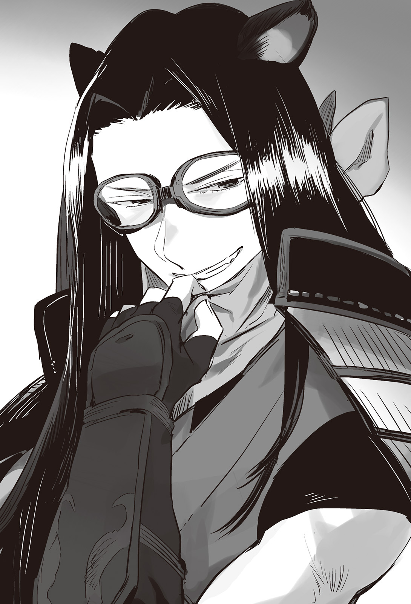

Chapter 1 – Northern Battlefront
.
Part 1
Nedras Kingdom fell──.
Furthermore the time needed for Nedras Kingdom to fall since the reborn Trystovy Kingdom army under Baldr’s command invaded was less than several weeks. That might be the shortest time needed in history for a country to fall.
Not only Answerer Kingdom and Europa Church that were hostile toward Baldr, even the neighboring country Grand Duchy Tenedora was greatly shocked by this news. Grand Duchy Tenedora was the same like Nedras Kingdom, it had an archduke with the blood of Answerer royalty flowing in him sitting on the throne, and the country turned into a vassal state. They thought that next it would be their turn to meet the same fate like Nedras.
「Trystovy Kingdom might come attacking as soon as tomorrow!」
Such atmosphere was filling the country. The nobles and the masses were falling into panic.
The one who was most shocked was the archduke of Grand Duchy Tenedora, Benriach Tenedora.
「……Was Answerer Kingdom really trying to protect Nedras Kingdom?」
The archduke was having misgivings about that point.
He thought that Answerer Kingdom’s response when Nedras Kingdom was at danger was too small.
Although there was also the reinforcement from the church, considering the national power of Answerer Kingdom, shouldn’t that country be able to send even more soldiers to Nedras Kingdom?
And yet they only sent that many soldiers, in the end just how much Answerer Kingdom would do in order to help Grand Duchy Tenedora? The archduke was directly confronted by such doubt.
「──Dear.」
Even his wife who was usually clad in a noble atmosphere that couldn’t be affected by anything──she was also a daughter of Answerer king Alexei──was unable to hide her anxiety regarding this case.
The archduke wanted to yell at his wife saying that he was the anxious one here, but he also hesitated to vent his anger at his wife who didn’t have any particular flaw except her high pride.
「Father-in-law isn’t going to abandon my country right……」
「Obviously! Answerer Kingdom’s dignity will drop like a rock if they abandon Grand Duchy Tenedora now!」
With the fall of Nedras Kingdom, the balance scales of the two major factions was slightly leaning to Baldr’s alliance.
In contrast, if the axis powers with Answerer Kingdom at the top lost Grand Duchy Tenedora, their side would immediately lose all trust.
The neutral countries would rush to switch side to Baldr’s alliance. In that case the church and Answerer Kingdom would have to face almost the whole world by themselves.
It was terrifying that Answerer Kingdom would still be able to put a fight even in such case, but as expected they wouldn’t be able to avoid their situation from slowly turning worse.
「Dear, you aren’t going to betray Chichi-ue aren’t you?」
Nedras Kingdom was already surrendering to Baldr. They were in a state of that was close to relinquishing their independence.
Although the beastman Lagunitas was appointed to be the kingdom’s army commander, there was no change with the prime minister and the high class bureaucrats. They still kept their post, so the people’s anxiety was reduced drastically.
In addition, humanitarian aid was also flooding from Trystovy Kingdom. It was really effective. It made the people of Nedras Kingdom who had only ever experienced extortion from Answerer Kingdom to doubt their eyes.
At the very least Baldr had obtained a certain level of success in the early stage of his occupation.
If the public order wasn’t kept stable like this, Baldr would have to assign his soldiers whose number was already few from the start in order to maintain the public order. Doing that would make him had insufficient troops for the decisive battle, which would be putting the cart before the horse.
From time immemorial, what caused a great empire that had grown large from subjugation to decline and fall was because they were unable to manage the subjugated territories well and their military strength getting stretched thin.
The British Empire was able to maintain a world spanning empire even with their small population because of their outstanding finesse in maintaining their occupied territories. It wasn’t just for show that their policy for their occupied territories became nicknamed Burikasu. (TN: Japan’s nickname for British Empire’s policy)
「Of course our country is at Answerer Kingdom’s side. However, that might not be the case if Answerer Kingdom has a different thinking.」
In other words he was asking for a concrete aid and countermeasure. Unlike in Nedras Kingdom, there was no beastman rebellion in this Grand Duchy Tenedora. So there was also no force of Answerer Kingdom that was already stationed here. This country had no military force that could oppose the alliance.
「──If Answerer Kingdom can’t protect us, then we have no other way left except to surrender. Please tell father-in-law about that clearly.」
However, the internal condition of the grand duchy also wasn’t truly united.
Although the condition here wasn’t as bad as Nedras Kingdom, Grand Duchy Tenedora was also a vassal state that was being exploited by Answerer Kingdom. There was a force here that wanted to be liberated from that position.
Naturally they were making an offer to Trystovy Kingdom that they would cooperate in the invasion of Grand Duchy Tenedora.
.
「──Leak the information. Secretly.」
The prime minister Augusto decided on his own to leak the information to the grand duchy’s side.
Actually the one who was in control of the intelligence agency that was inherited from his father Valerie and the vast information network that was created with the cooperation of Dowding Group wasn’t Baldr, but Augusto.
Like that Augusto carefully screened the gathered information and he only reported the important parts to Baldr. Without that, Baldr’s time would be unnecessarily reduced because of how much the amount of information was.
This wasn’t something that could be done with just an average level of trust. If Augusto felt like it, he could even manipulate the information and cornered Baldr to a predicament.
Even so, this didn’t mean that the two of them were tied with deep friendship that they were able to do this.
「You lady killer should have just your thing rot and fall off.」
「Don’t be jealous just because you have your ass whipped……」
If anything, these two always quarreled at the private setting more often than not.
Later on in the history book the sentence 「It’s a mystery how two people with such very bad compatibility could become the history’s greatest king and prime minister」 would be written like a set phrase. However as expected these two had no way of ever knowing that.
Archduke Benriach felt terror after he was informed by Augusto──or more accurately by the intelligence agency in Augusto’s control of his retainers’ betrayal.
Perhaps he was also going to get killed like Duke Vassily of Nedras Kingdom? Just from thinking that made him unable to stay calm.
The people in terror generally made one these two choices. Running away, or suppressing it with even greater terror.
「──Slaughter them. Don’t left even a single one alive.」
Archduke Benriach who was seized by paranoia executed the commoners and nobles who offered to work together with the alliance along with their whole families.
As the result, the situation calmed down for a moment. However when the army that was dispatched from Answerer Kingdom arrived and began eating up the supplies of grand Duchy Tenedora completely, the fire of rebellion was flaring up once more.
The fact that Nedras Kingdom was overflowing with food aid from Trystovy Kingdom after surrendering worsened it.
The grand duchy was desperately trying to control the information, but it was impossible to completely suppress the information of a neighboring country that bordered directly with them. Furthermore the companies that were under the influence of Dowding Group were also spreading the information laboriously.
「Well, it’s going to be any time now.」
While Augusto was sporting a cruel smile, a coup d’etat was starting to be plotted with the nobles at the center of it.
──Why was that?
Grand Duchy Tenedora that was a vassal state of Answerer Kingdom had been forced to import the indispensable commodity of salt and also the necessary gold for producing currency from Answerer Kingdom until now.
Of course a part of the territory that was bordered with Trystovy Kingdom was rife with smuggling, but both nobles and commoners were fundamentally unable to oppose the nation’s monopoly.
As the result, it was the people who were made to pay the bill. The very small minority of the upper echelon also still added extra fee for themselves on top of that, so it was unbearable for them.
And then, what would happen in the end if a lot of commodities from a different route with cheap price were dangled in front of them? Furthermore it was dangled in front of the people who didn’t get any share of the pie at all until now.
In order to save the people from poverty──such excuse was more than enough to serve as justification. It was the natural result for them to switch side to Trystovy Kingdom.
「Help them by providing information and supplies. It won’t be a problem even if they get discovered and crushed. It will be to the benefit of our country if the chaos keeps spreading there.」
After Augusto ordered that to his subordinate Talisca, he looked up to the ceiling and sighed.
「……Good grief, recently all that I’m doing are completely the same like my father.」
「With all due respect, this should be called as the two of you being falsely similar.」
Talisca who was the leader of the intelligence agency that he was entrusted from Valerie smiled with deep emotion.
Augusto didn’t have the grimness in him that would make Talisca felt pained like with Valerie.
There would be shadow in a place where there was sun. However in a world where there was no sun, the shadow wouldn’t stay as shadow, but transformed into infinite darkness.
Just how much tenacity and deep-seated grudge that Valerie needed in order to persist with his own will of shadow within that darkness?
Because he was someone whose duty was to be a shadow, Talisca understood just how abnormal Valerie’s willpower was to be able to continue being a shadow without being swallowed in darkness.
But there was no need to worry about that with Augusto. After all he had the sun that was Baldr. That was why he could focus being the shadow without any worry.
(Well, I won’t say it because these two absolutely won’t recognize it though.)
「……That’s an unpleasant gaze. It reminds me of father’s eyes when watching me dancing on the palm of his hand.」
「I won’t dare.」
It seemed he had carelessly showed his emotion on his face too much. A cold sweat trickled down Talisca’s back when Augusto’s cold gaze pierced him.
「Even so, is this alright? If Augusto-sama wish it so, we can also make the coup d’etat a success.」
「It will be more troublesome if those guys succeed in their coup d’etat and then completely cling on us. After all that country doesn’t has anyone like Lagunitas-dono who can infer our country’s intention and act in concert following that.」
It would be better if they stayed chaotic like that for a bit more. Then this side would charge them with the highest price at the best timing for selling favor.
(Aa, his delighted expression when scheming a sinister design is completely like the late Valerie-sama.)
「──What is it?」
「No no, then I shall quickly prepare all the arrangements.」
.
Part 2
「Fufufufufufufufufu」
「Unyanyanyanyanya」
Perhaps it was Urraca and Satsuki who were feeling the happiest with the invasion and the surrender of Nedras Kingdom.
They were alone with Baldr just the two of them, no, the three of them in a foreign country with a sea separating the distance. Here, the nuisance Silk, and also Selina and Rachel whose black hearted scheming was increasing recently weren’t here with them.
They couldn’t be blamed for having expectation to experience sweet adventure with Baldr in the rest of their time until they returned home.
The problem was which would be the first──.
「Don’t hold any grudge nya.」
「Hah! I’ll make you howl as the loser!」
「Cat-eared tribe won’t howl like the dog-eared tribe nya!」
The two maidens coincidentally sported the same fearless grin on their lips.
It was the reenactment of Silk and Urraca’s battle in the past. It was the collision of two maidens’ prides clashing against each other with a man on the line.
However as expected even Urraca was forced to admit that the matchup would be too bad for her if she faced a King’s Gate owner.
If they were on sea, then the match could still swing to both ways. Urraca who was raised with the sea as her cradle was used to fight on the ship with its unstable footing.
「Don’t worry nya. I’ll make you fall asleep without feeling any pain nya.」
「Are you alright? This is the time for the kid to go to bed you know?」
「Who are you calling a kid nya! ……Guu」
Satsuki limply pitched forward like a puppet with its strings severed. Then she began to let out a tranquil sleeper’s breathing.
「It seems the sleeping drug is working wonder.」
Urraca looked at Satsuki who was lying unmoving face down on the floor with a satisfied grin and laughed.

Actually she had put sleeping medicine inside Satsuki’s wine from the start. It was a sleeping drug with amazing effect that she intentionally ordered from the southern continent beyond the sea.
「Fu-fu-fu-……Baldr, I’m not going to let you sleep tonight until morning.」
Urraca visited Baldr’s bedroom in high spirits. She was wearing a crimson chemise that she directly received from Sanjuan Kingdom’s queen Maria that was prepared for this day.
Those who doubted Urraca’s common sense at this point with the way she was still believing Maria even now were correct.
There was no way that Maria would honestly teach Urraca a decent advice.
「Baldr~~, your Urraca is here you know?」
「……」
「Eh? He is sleeping? I didn’t put any sleeping drug in Baldr’s wine though……」
She put something else other than sleeping drug though.
She was told that it was Maria’s handmade aphrodisiac.
She should have put that drug inside Baldr’s drug because she wanted to have him worked hard tonight until she got pregnant.
「……I can’t hold back anymoreeeee!」
「Kyah!」
「Fushuu, fushuu」
「W-what’s wrong Baldr? You’re looking scary.」
「After drinking the wine at night, my libido is seething and won’t settle dooown!」
「I, I was tricked……it’s not aphrodisiac at all, it’s a drug to turn someone in heat.」
My my, ufufu…… the delighted smiling face of Maria flashed at the back of Urraca’s mind.
「B-but, in its own way this is……」
「Prepare yourself Urraca!」
From the start she had readied herself to assault Baldr on bed and made love to each other. Rather she should welcome it that Baldr was this motivated.
However that resolve of Urraca had completely misjudged the stamina of a berserk King’s Gate owner.
.
「……This is horrible nya.」
The next morning, Satsuki muttered as though she had comprehended everything seeing the disastrous state of the bed.
「It was amahzing.」
「Don’t speak like Silk, nya.」
「But it was amahzing.」
「……Anyway, hand over the drug you used on Baldr to me too nya.」
That night, a yell that sounded like Satsuki’s screaming was reverberating until late at night. Something like that might have happened.
.
Part 3
In the secret research room that was set up inside Gartlake Kingdom’s beast god shrine, the head shrine maiden Sakuya Kagetsu who served the beast god Zoras was mentally troubled by the mystery that only kept deepened.
「Good grief, I can’t even grasp a single clue. It’s really pathetic of me……」
The holy relic to seal King’s Gate that was handed to her from Baldr. Her progress with it was going well until she found the letters that looked similar with the ancient beastman language.
However it was extremely difficult to decipher the meaning.
The ancient beastman race was considered as extinct in the era far even before the appearance of the beast king. Even for the beastman race of the current era, the ancient beastmen was a mysterious race.
「The only thing that I can say with certainty is the record that said that the ancient beastman could use mana.」
The beastman race could use mana a long time ago──.
Sakuya felt her back turned cold by that fact.
The many slanders, discriminations, and persecutions to beastman race. Most of them were caused by the fact that beastman couldn’t use magic.
The fact that beastmen could use Transformation to strengthen their body in exchange of not being able to use magic made human considered beastman as a different race.
If beastman could use magic normally, even if there would still be difference of interests between them and human, the discrimination surely wouldn’t be this bad.
At the Nedras Kingdom that had just gotten liberated recently, the number of beastman who lost their life was nearly half of their total population. As for the beastmen who lived in Answerer Kingdom that was the home of Europa religion, they were practically extinct there.
Even if there were beastmen who managed to barely survive, the possibility was high that they were treated as slave or even lower than that.
「Since when? Since when we lost mana? Why is King’s Gate owner able to use mana?」
Was King’s Gate owner those who went through atavism to become like their long time ancestors?
If it was true that their distant ancestors could use mana, what was the reason that the relic that they created could seal King’s Gate’s power?
Baldr and Satsuki weren’t here so she couldn’t do any experiment, but it was clear that the holy relic didn’t have the strength to seal mana. As the result of confirming it with Gartlake Kingdom’s royal magicians several times, it had been proved that the holy relic didn’t affect the usage of magic in human at the slightest.
What was even more mysterious was that it also couldn’t affect the Transformation skill that was unique to beastman.
The ability to explosively increase physical ability, which was the only field where beastman was superior to human.
Even though the holy relic couldn’t affect that ability at all, it could seal the majority of the strength of King’s Gate.
Was something like that possible?
For what the ancient beastman race who seemed to be the one creating this holy relic had to create this tool to seal the King’s Gate that was the hope of the beastmen?
「……It’s frustrating but, my research can progress properly is thanks to Gina’s hypothesis.」
Although both beastman tribes were in cooperative relationship right now, it still didn’t make her feel good at all to receive assistance from the long time rival Gina.
She still felt like this even if it was something necessary for the beastman race.
Gina’s hypothesis came from the hint that she heard from Answerer’s fierce general Mikhail Kalashnikov about his birth.
──The fact that King’s Gate owner must have the experience of dying in the past.
Sakuya knew how Satsuki had experienced of wandering in the boundary of life and death when she was a kid. She was frustrated why she was unable to reach the same hypothesis despite knowing that.
Although even Gina was able to reach that conclusion after knowing the story of Baldr, Maggot, and then Mikhail. From the start it was completely impossible for Sakuya to make the same hypothesis when she only knew about Satsuki’s case.
When Sakuya investigated about the King’s Gate owners in history, all the results she found were substantiating Gina’s hypothesis.
Although there was difference in cause like sickness, wound, or perhaps accident, all the King’s Gate owner had experienced being almost dead without exception.
It was a common feature that no one had ever realized until now.
「Well, just because that’s the common feature, it doesn’t guarantee that it is really the cause.」
Of course, just being almost dead was still lacking to be the requirements for awakening King’s Gate. There were countless beastmen who had experienced almost dying.
Sakuya gave up pursuing this topic any further for the time being.
Seeing that the possibility was high that the holy relic was related with the civilization of ancient beastman race, she was planning to approach this by carefully reading the legends of ancient beastman race.
「For that, I’ll even bow my head no matter how reluctantly to borrow even the old scriptures of the other side(dog-eared tribe).」
Both the cat-eared tribe and dog-eared tribe were family who were born from the beast god Zoras. Both sides shared such recognition.
The minority tribes wolf-eared tribe and tiger-eared tribe were also the same. All the beastman race in this continent was born from the beast god.
It was said that in the past the beast god Zoras ruled over a world called Mirmina.
That world Mirmina had ripened and Zoras judged that the world had become independent from him. So he departed to search for a new land.
──And then he descended to this Aurelia Continent.
Zoras bestowed his blessing to this new land, but he felt lonely that he had no family in this world and created the beastman race.
It was said that the beastman race was created with the most loyal follower of Zoras in Mirmina as the model.
Aurelia Continent prospered with Zoras’s blessing. Amidst that, the beastman race was carrying out a central role.
The uncivilized human was given knowledge from the beastman race. With that humans were able to develop farming and civilization.
After they were liberated from hunger, the land they could rule increased, and they became prosperous, conflict between human and beastman began to increase before long.
The beast god Zoras felt sad because of it and left the surface to watch over the world from the heaven…….
If the episodes like hero anecdote or battle with monster were excluded, the story in general was something like that.
Strangely, even though there were heroic fables like dragon extermination, she didn’t find any description of beast king in the myth.
The traditional interpretation until now was that it was only natural because the beast god ruled the beastman race directly at that time, but the humans at that time had proper kings ruling over them.
Even if the god was ruling directly, the society wouldn’t move without hierarchical relationship. And yet the ruling system of beastman at that time stayed unclear to an illogical degree.
And then after Zoras left to heaven, the beastman race was persecuted by humans with their greater number and things arrived at the present time.
The birth of the beast king and established the kingdom of the beastman race was something that happened after a lot of time had passed since then.
「……Hmm.」
It might be unbecoming for a shrine maiden who was serving the beast god, but Sakuya believed that Zoras’s departure to heaven was a type of a fairytale. She believed that god was an existence that watched over them from heaven, not an existence that actually wielded his power for real among them.
However she couldn’t discard the possibility of Zoras’s involvement with the fact that the ancient beastman race could use mana but the present beastman race couldn’t.
Why did Zoras leave to heaven?
What was the meaning that Zoras’s only creation was the beastman race?
「I thought it was only a heretical book that doesn’t worth any consideration but……」
Sakuya took a manuscript with battered binding that was almost crumbling and frowned in puzzlement.
『Myth of Zoras’s Descent』
It was a heretical book that was secretly hidden by Gina’s ancestor from book burning. It was written in it that Zoras wasn’t just one being.
Zoras was a group of around 200 people. They were gods who came here from a world called Mirmina and brought about civilization and magic to this continent……
Currently Sakuya was unable to laugh it off as a stupid story.
After all it matched a part of the story of the ancient beastman race that seemed to have mana and could use magic.
「Then why did the ancient beastman race vanish? Why did they have to create a relic to seal beatman race’s King’s Gate?」
There were too many things that were unknown. It seemed that she would have to examine the heretical books that she had ignored until now while also experimenting with the holy relic at the same time.
She unconsciously sighed at the vast amount of work that was waiting for her.
「That woman is pushing off this troublesome work at me. As I thought, I really hate her!」
.
Part 4
The royal court of Answerer Kingdom was wrapped in a heavy atmosphere.
The joy from obtaining the title of Vhoipos and being generally acknowledged as the successor of the unification dynasty had only lasted for a brief moment. The international situation was progressing to an unfavorable direction for Answerer Kingdom.
Especially the fall of Nedras Kingdom not long ago. It had crushed the dignity of Answerer Kingdom.
After all it was only natural that such happening was causing Answerer Kingdom to be disgraced as a country that couldn’t even protect a satellite country that belonged to the king’s grandson.
「I shall not pardon any further disgraceful result than this.」
Alexei III spoke in displeasure from his throne while looking down toward his trusted retainers.
「We have underestimated the enemy. This is my responsibility.」
「It’s painful that the church’s influence has decreased even more than we expected.」
It was the prime minister Marquis Marat Bolshakov and the crown prince Piotr who replied to the king’s statement.
Marat’s voice was especially lacking luster as the one who schemed to obtain the title of Vhoipos in order to give command to the whole continent.
「The church was completely neglecting to play the role as intermediary in the civil war and the wars until now. And now we are feeling the effect of that greatly. It’s truly irritating.」
The reaction of the people would be different if the time was at the early stage of Trystovy civil war.
However the church had been standing and watching without interfering, abandoning the people for more than ten years. The gratitude of the people toward Baldr who crossed the sea and saved them was too different compared to the church.
It was the same with the war between Mauricia Kingdom and Haurelia Kingdom. Europa Church didn’t play any part at all with bringing the end to the war.
Although the ulterior motive of Answerer Kingdom that was wishing for the two kingdoms’ decline as fellow rival for being the successor of the unification dynasty was also playing a part in it.
The two countries gradually ruining themselves with conflicts was something that Answerer Kingdom wished the most.
That was why Answerer Kingdom pressured the church behind the scene to stop them from casually trying anything.
They thought that their scheme had gone well.
Trystovy had fallen so low that the fact that it was a powerful country in the past sounded like a lie. Mauricia Kingdom and Haurelia Kingdom also lost their leeway to turn their focus outward due to the military tension between them.
During that opening Answerer Kingdom successfully turned Nedras Kingdom and Grand Duchy Tenedora into its vassal states. They were at the height of their glory.
Who could possibly predict that it would rebound back to bite them with adverse effect at this point?
The beginning of everything was Baldr.
Without Baldr, the war between Mauricia Kingdom and Haurelia Kingdom would drag on longer. Trystovy Dukedom also wouldn’t be destroyed.
Just a single young man was trying to change the world’s system.
Alexei was terrified by that fact.
If it was something that he could comprehend, there would be ways to apply countermeasures. However no countermeasure could be prepared for something that was beyond understanding.
「──The Great Triangle is shrieking in panic right now.」
「It’s do or die time. Tell them that if they are merchants then they should know when is the time for them to use their money.」
Just the other day, Alexei ordered the Great Triangle to provide money for large-scale military action.
The Great Triangle──Wittgenstein House, Turgenev House, and Zamyatin House had been given preferential treatment until now exactly in preparation for this kind of time.
Even so, the Great Triangle had already made a lot of hefty investments. Being asked to prepare even more military expense was a painful blow for them.
At the present time where Nedras Kingdom was lost and Grand Duchy Tenedora was split into two factions and fell into chaos, their financial situation was on one way street that was heading toward deterioration.
The agreement of fixing the exchange rate between Trystovy Kingdom and its allied countries that came at this time was like pouring salt on their wounds.
The value of Piotr gold coin was already freefalling due to the excess supply of gold. The value had already decreased until it was just slightly more expensive than silver coin.
This was a serious blow toward Answerer Kingdom that didn’t have a lot of silver mine of their own.
Originally the depreciation of currency would connect to the increase of export and urged the growth of trade amount, but right now the country was in wartime. In this situation they would want a strong international currency instead to back them up in buying up supplies in cheap price.
War would consume a lot of supplies one-sidedly without producing anything in return. For the currency to depreciate in such period of great consumption was nothing but nightmare for the merchants.
The country couldn’t possibly allow strategic resources like food or horse to flow out to other country in the wartime.
However a vast amount of expenses would be needed to buy up those resources.
The dissatisfaction could be repressed just barely because Answerer Kingdom was blessed with fertile land so that it wasn’t a food importing country but a food exporting country, however if a food crisis also occurred at this time, then an insurrection within the country would be unavoidable.
「What is the reply from the pope administration?」
「As expected even they seem to be frightened out of their wits for this time……they finally agree with making their secret information available to us.」
The church had been restricting the availability of the holy relic because it was a forbidden information, but they couldn’t stay quiet anymore after the fall of Nedras Kingdom and the annihilation of the volunteer army that was dispatched to Nedras Kingdom.
If Answerer Kingdom was defeated by any chance, Europa Church wouldn’t have any more future.
The church that chose to confront Baldr head on had no other choice except placing their bet on Answerer Kingdom’s victory.
.
Part 5
「How wretched!」
It was also a sorrowful decision for the pope.
A knowledge that had leaked out once would never return back to obscurity anymore.
What was waiting ahead of the creation of gunpowder, and then firearms after that was an era of firepower war where a lot of people would be slaughtered.
The previous popes decided to seal the knowledge because they feared such thing. With this the pope wouldn’t be able to apologize to them no matter what he did.
However that king of beast, Baldr had succeeded in mass producing the demonic weapons. At this rate it was obvious the forces at the church’s side would decline if they continued staying passive like this.
He prayed so that the like of Baldr who resurrected the demonic weapons to be inflicted with a thousand curses and fell to hell.
The pope clenched his fist tightly in helpless indignation.
Nobody could stop it anymore.
Would it be that king of beast who won, or would it be the church and Answerer Kingdom? Either way there was no doubt that a lot of blood would be shed. The way of fighting and the way of thinking of people’s heart would also be changed.
(The world that I know, the teaching that I know, everything has changed. Nobody could possibly predict this kind of change.)
At the present situation, all the countries were all trying to butter up Baldr. The pope felt that this situation wasn’t caused solely by Baldr’s strength in war and the profit that he provided.
One of the biggest reasons was the discovery of the existence of the huge continent at the south that rivaled even this Aurelia Continent.
Currently Sanjuan Kingdom was monopolizing the trade with the south continent, but the amount of novel goods that were flowing in from the south had increased by quite a lot.
Attracted by the profit that was being monopolized by Sanjuan Kingdom, other countries would clearly join in the effort of developing a trade route.
「They have different custom, different religion, different skin, and yet everybody is easily wagging their tails for the sake of profit. What foolishness……」
Even if curiosity was winning right now, the cultural exchange with foreign culture would bring forth change one day.
The fading of human’s repulsion toward beastman would also be one of those changes.
Even if it was something that didn’t matter for the commoners, it was a situation that couldn’t be allowed to happen for religious organization that held absolute authority.
For the pope, Baldr was already completely like a demon who destroyed anything and everything in this Aurelia Continent, from the peace until all the traditions.
Curretnly, only thirty percent of all Europa believers who agreed with the crusade and exerted themselves to help.
Excluding Answerer Kingdom and other countries on its side, the most that the church could hope from the countries that were allied with Trystovy Kingdom was a passive show of disobedience. Such half-hearted reaction was already the best the church could hope for from those countries.
Even the terrorism and insurrection that the church hoped would occur didn’t happen at all. Rather the number of disappointed believers was increasing every day because the church hadn’t produced any good result despite already proclaiming a crusade.
It was truly a negative circle.
「In order to win……in order to not allow this continent to fall into that demon’s hand……even dirtying my hand with taboo is unavoidable. O god, please forgive this powerless servant of yours.」
The church couldn’t keep the holy relics a secret anymore than this.
The lid of the taboo that had been sealed by the previous popes until now so that this world wouldn’t be pushed into chaos was finally opened.
Just imagining what kind of calamities would be brought forth in the end because of this was sending shivers throughout his body.
He finally arrived at the seat of pope after many trickeries in his desire for authority.
However, the pope was deeply aware that he actually was nothing more than a petty man who was fixated with prestige and authority.
Shouldering the weight of this continent’s history and the futures of countless people was something that far surpassed his caliber.
「Why──why do I need to become the pope at this era, god」
The die had been cast.
How would a superpower like Answerer Kingdom made use of those relics and spread the flame of war?
「Perhaps it’s pointless for someone like me who have already ordered the believers to die in the holy war to think about it. I pray that we can at least be rewarded with victory after all these troubles.」
.
Part 6
The actual things and the blueprints for gunpowder production method, rifle, and land mine were brought to Answerer Kingdom just the other day.
「The mystery of Trystovy Kingdom army’s equipment when they came to Nedras Kingdom is finally solved.」
「Unfortunately although the mystery of their equipment is solved, the mystery of their creation hasn’t been solved too.」
Although they had obtained the actual things and the blueprints, firearms weren’t something so simple that could be mass produced immediately.
Even if they could create rocket arrow and grenade that had simple mechanism, it was unknown how much time they would need until they could complete gun and cannon to usable level.
「The church should have handed this to us from the start without putting on air!」
Alexei spat out angrily because the cold water was thrown on the hope that he finally obtained.
「……What do you think military minister?」
The newly appointed military minister, Borodino made a conflicted grimace at Piotr’s question.
「The army is already finished mobilizing. They can depart anytime. However the navy has to stay in the defensive. After all even Horntbeck Kingdom has turned into our enemy.」
「No wonder the Great Triangle is shrieking.」
Horntbeck Kingdom was defeated by the combined fleet that Urraca and Jose led. After that they surrendered to the alliance. Because of that the power map of the sea was greatly shaken once more.
Horntbeck Kingdom had joined the strongest combined fleet that was made up from Trystovy Kingdom, Sanjuan Kingdom, and Majorca Kingdom.
In addition, although Orkney Sea was like the backyard of Answerer Kingdom, Horntbeck Kingdom also had the full knowledge of this sea.
The merchant ships of Answerer Kingdom were being completely blocked from sailing because the main sea routes were being blockaded.
「It pain me to ask this but, the navy won’t display a disgrace like Nedras Kingdom won’t they?」
「O-of course your majesty!」
Allowing a large scale landing operation from the sea was simply a disgrace for a navy.
This glorious Answerer Kingdom must never commit such blunder no matter what.
However, because they had to be on guard against such possibility, they were forced to leave behind soldiers to defend along the coast area.
Even though Answerer Kingdom had superior number of soldiers, they had to throw away that advantage.
「Umu……then it’s finally time to settle this.」
Answerer Kingdom that possessed the biggest population, assets, and resources in Aurelia Continent was finally going to move.
.
Part 7
「Rocket arrow isn’t an omnipotent weapon! This relic will be indispensable for the battleship from here on! Why won’t you understand that!?」
「Hmph, what does someone like you who lost your fleet before your own eyes and abandoned your allies can possibly know?」
「Guh……!」
What was waiting for Answerer navy’s commander who returned home after his defeat in the sea battle at Marmara Sea, Percival was scorn and discrimination. Although he had resolved himself for this, it was still painful to hear those words.
Even so he managed to avoid getting dismissed because the battle lessons that he brought back was precious.
Urraca’s ship handling skill, Jose’s fleet commanding ability, and then close range battle using flamethrower and smokescreen. Every single one of them was a threat that Answerer Kingdom navy had never experienced before.
However, the upper echelons of the navy were of the opinion that flamethrower wasn’t a match against rocket arrow if from the start they weren’t dazzled by the opponent’s spectacular fleet maneuver and the smokescreen.
Captain Domitory, the confidant who made Percival resolved to return home alive that day wasn’t here anymore.
A ship captain like Domitory was too precious to be entrusted to an admiral who had been rotated to a dead-end post.
The current Percival was an admiral in name only. He was a decoration who didn’t have any fleet under his command.
Although, there weren’t many ship captains who wanted to work under a commander who returned from leading a great fleet with only four ships at the end.
「At this rate……」
Even though he kept living in disgrace in order to tell everyone else about the threat of the enemy, he was only able to achieve 20% of his objective at best.
To say nothing of how the navy’s current upper echelons weren’t taking in the defeat of Horntbeck Kingdom’s Eustachius as something alarming at all. That person had also received rocket arrows from Answerer Kingdom. And yet Horntbeck fleet that was equipped with that rocket arrow was defeated. There must be a reason for it.
The moment Percival saw the cannon that was included among the information that Europa Church disclosed, he believed that he had found the answer for the mystery.
The sea was a flat world without any cover on it.
Of course there was the influence from the wind, the sea current, and the weather, but the sea had the trait that the terrain’s effect wasn’t as significant as on land.
That meant, a weapon that could attack from longer distance with greater destructive power would have the advantage.
Percival was convinced of that conclusion’s truth when he obtained rocket arrow.
But why the upper echelons didn’t understand such simple thing?
Percival felt like the more skilled a sailor was the more they would be inclined to be lacking in power of understanding.
「Percival-kun, you have the tendency to prioritize theory when theory and reality are opposed with each other.」
Percival’s former mentor once evaluated him like that.
He didn’t think that he was completely mistaken. The biggest reason of his defeat at Marmara Sea was the technique that was possessed by sailor and its usage.
The armchair theory lost against the technique at the actual scene.
Even so, there was no way that meant that theory had to be completely neglected because of that.
Certainly, cannon was weapon that was difficult to handle. Rocket arrow with its simple construct was far easier to handle and also to mass produce.
When it came to accuracy too, unlike rocket arrow that could be compensated with number, cannon was fundamentally difficult to be gathered in large number. The ship’s body would shook by the recoil of the cannon firing. In the worst case the accuracy of cannon could be lower than rocket arrow. That was the current situation that cannon was placed on.
In short, cannon was thought as having wonderful ability but useless in real battle.
「Difficulty of handling can be compensated with effort, but effort cannot compensate for ability! Why don’t they understand that!」
They couldn’t go on like this.
He didn’t live in disgrace just for things to be like this.
After all he was able to accept defeat for none other than to protect his comrades from monsters like Urraca and Jose.
.
「──Your excellency, a messenger has arrived from Admiral Sergei.」
「I see, let him pass immediately.」
Sergei Zhukov was Percival’s superior. He was also the chief of staff of Answerer Kingdom’s combined fleet.
At the same time he was also Percival’s mentor at the officer academy who warned him of his tendency to lean toward theory.
Sergei’s subordinate who came was familiar to him──if he remembered correctly his name should be Igor──and he saluted courteously before opening his mouth.
「The navy headquarter has handed down an order for Admiral Percival.」
「I shall comply.」
「Tomorrow morning, admiral should depart to the navy headquarter to receive the official appointment as the commander of a raid fleet. The number of ships in admiral’s fleet will be twelve ships.」
「Affirmative! I humbly accept this command!」
Igor was also returning an energetic salute happily.
「Admiral Sergei is also waiting for your return.」
「I swear that I shall display a result.」
Twelve ships were a small number for a fleet of Answerer Kingdom.
However it was a large enough scale to be an experimental unit for cannon’s application. The fleet had enough number to focus on using cannon, furthermore as a raid unit it had mobility and high independence.
The decision to hand such fleet to Percival was a truly good one that understood where to make use of Percival in a strategic level.
(As expected from Sergei-sensei……I swear that I shall repay this favor!)
Percival’s reputation was low within the navy. To give someone like him a fleet even if it was a small one would surely invite a lot of opposition.
「Theory should be respected. But you must never forget that there are always be things that get in the way of theory.」
He was unable to understand his mentor’s warning of that day. This time for sure he wouldn’t betray his mentor’s expectation on him.
Percival swore to take revenge with a firm determination.
.
Part 8
「So they are finally making their move.」
In the king’s hall of Trystovy Kingdom──Baldr, Augusto, and then the person in charge of the intelligence Talisca were gathering there alone.
Baldr didn’t want to let Silk and Agatha listened to the talk that was too shady, nor there was any need to let them listen.
It was the same with military personnel like the great general Ramillies or Gitze who was commanding the beastman unit. If there was anyone else who needed to participate in this meeting, at most it would be the minister of domestic affairs Giloramo to take the stopper role as a person of common sense.
The opinion of Gilorama who genuinely thought of himself as a mediocre person was unexpectedly useful.
That was because Giloramo didn’t have the slightest intention to show off himself or trying to trap other.
The only time Giloramo would lie would be for the sake of retiring from his post as minister and lived a secluded life in his birthplace.
That was exactly why Augusto especially valued him highly and he couldn’t retire as the minister of foreign affairs, but right now Giloramo was allowed to have vacation for one month as a reward for his hard work in doing job that he wasn’t used to. So Giloramo happily returned home to his birthplace.
Even though he could gather as much influence and riches as he wanted in the capital Millianna, he still treasured his countryside home town more. That lack of greed was increasing Giloramo’s reputation higher even now.
「It will be a different matter if they don’t have any intention of going to war, but they are fully motivated to go to war even though Piotr gold coin’s value is freefalling, while the enemy country’s food production ability is rising through the roof, so of course it will become like that.」
They had already lost Nedras Kingdom while Grand Duchy Tenedora was split into two factions right now. The benefit that Answerer Kingdom could plunder from its vassal states were dropping drastically.
In addition to that their currency’s value was plummeting. Their import amount from other countries were dropping sharply.
Their degree of self-sufficiency in food was high, but for things like luxury grocery items, especially Dowding Company’s main products like cosmetics, medicines, gems, it rebounded back to them as great increase of expense.
Answerer Kingdom’s public order would become problematic if the dissatisfaction from this matter was neglected for long.
「It will be bad for their reputation if they keep losing in succession even though they have finally obtained the title of Vhoipos.」
And then the new variety of wheat also appeared. The disadvantageous news for Answerer Kingdom also didn’t stop there.
「The number of this year is clearly better than before. The topic is also becoming extremely popular among our allies.」
「It’s unconditionally a good thing that there is no more young children dying. Nobody will be able to complain about it.」
What Baldr was starting to put into practice in Trystovy and the allied countries were water’s sterilization with chlorine.
Actually sterilization of water was greatly related with human’s life expectancy.
The water sterilization using chlorine was started in Japan since 1921.
It was considered as the idea of the mayor of Tokyo at that time, Gotou Shunpei.
For better or worse, with the end of the expedition of troops to Siberia, the poison gas──the chlorine gas that was considered as the newest weapon of that time was available in excess amount.
Gotou Shinpei was well known as a politician, but he actually learned bacteriology in Koch Laboratory at German. He was a scholar who had also acquired doctor’s degree and he had the complete knowledge of the effect of chlorine in sterilization.
Such coincidence really should be called as the arrangement of heaven.
Unexpectedly it wasn’t known at that time that there was a groundbreaking difference in infants’ mortality rate when using water that wasn’t sterilized and water that was sterilized.
The life expectancy of human was low before the early modern period wasn’t because of human being unable to live long at all, but actually it was because the mortality rate of infants pushing down the average value of the data.
Even in Edo period, it wasn’t rare for people to live until 50 or 60 as long as they grew up healthily.
Putting it the other way around, the mortality rate of infants dying before they reached adulthood was extremely high. One theory stated that the chance of human being able to reach adulthood was 50%, which meant that one of two kids would die at that era.
Even Japan that had relatively good water quality was in such state.
In Africa and Middle East that had bad water quality, the danger of unboiled water shot up even further.
There was a story of how a foreign student from Africa saw students eating nagashi soumen (fine white noodles served flowing in a small flume) and he desperately stopped them saying that what they were doing was suicidal.
Several of his family members died because of poisoning from water. He knew from experience that drinking unboiled water would lead to a danger to life.
That was why it needed a long time to convince that student that it was alright to drink tap water in Japan without boiling it first.
The popularization of sterilizing water and the concept of hygiene, and active support from the government for the infants. The result of those was the dramatic improvement of mortality rate of infants in Trystovy.
Babies who usually were unable to survive the winter all survived this year.
It was thanks to the teaching of his majesty Baldr.
It didn’t take long for such rumors that were accompanied with actual precedents to spread through the whole country.
No, of course it was also the result of the intelligence agency that was led by Talisca lending a hand proactively in the spreading of the information.
The rumors weren’t a baseless rumor by any means.
The number of babies who died really was decreasing.
In addition the allied countries that received Baldr’s warning and practiced chlorine sterilization in a part of their country also obtained similar result.
Baby who was just born would feel especially lovely. Any parent would surely feel that.
The fact that such baby wouldn’t need to die gave a great impact to the consciousness of the people.
Furthermore, the church had never performed such miraculous blessing.
Europa believers who considered Baldr as an enemy of their faith was increasingly decreasing.
What was terrifying wasn’t just that. As the result of the infants’ mortality rate decreasing sharply, they would grow up to adulthood and explosively increased the country’s population.
The current Trystovy Kingdom and its allied countries had the power to support such increase of population.
Population and food production capability was the simplest indicator to display the national power.
There was no doubt that in ten more years, Answerer Kingdom’s population rate would be reversed compared to other countries and it would fall to become a second rate country.
The only time for them to take action was now. If they didn’t take any action, they could only give up unifying the continent and became a member of the alliance too.
「They don’t have any intention of surrendering to us without any resistance. It saves us the time and effort for making a move ourselves.」
It wouldn’t be simple to invade Answerer Kingdom with its vast territory.
Especially because the hostility of the people there would be high. There wouldn’t be any cooperation that could be expected from them.
If they were only intercepting the enemy that was heading to them, the distance needed for their supply line would be shorter and the burden from maintaining it could be reduced.
Originally the attacking side would have the initiative in battle, but Trystovy was already aware that the enemy would come attacking, and they also had the radio information network that could investigate the enemy’s situation in detail.
They would inflict a heavy blow at the beginning of battle and took away Answerer Kingdom’s ability to counterattack as much as possible.
Ramillies was ready and waiting at the front line was solely for that.
.
Part 9
「Now then, they should be arriving soon.」
Ramilllies who was leading 30000 troops of Trystovy Kingdom was taking position in a location that had the same distance to pope territory and Grand Duchy Tenedora. It was the city Siracusa that was at the northern part of the old Pazarov territory.
「Don’t you think that they will go to retake Nedras Kingdom?」
A senior retainer since Baldr’s days at Antrim, Gerhart asked Ramillies.
「Well, they definitely won’t. At least until they can retake the control of the sea, because it will be too dangerous otherwise. If it’s me then I won’t try it.」
The shock from the assault to Ninliver and the landing operation there toward Answerer Kingdom’s military was considerably, so now they were forced to be always in the lookout of assault from the coast.
For a large army with poor mental defense, a pincer attack was a nightmare.
Even if they understood that they had the advantage in number, they would become unable to make a composed decision when their path of retreat was cut off. There were too many cases to mention where army crumbled because of that.
Even that retreat of Kanegasaki that put Oda Nobunaga in danger, at that time Oda force actually had nearly twice the number of the enemies, so it would be Oda force’s crushing victory if they continued fighting.
Oda force couldn’t split into two groups to intercept Asakura and Asai proved that the physiological impact of pincer attack was just that great.
In other words if Answerer Kingdom wanted to fight inside Nedras Kingdom, they would have to constantly be on guard against Lagunitas who excelled in guerilla war, Trystovy Kingdom’s regular army, and then surprise attack by army that was taking a detour with landing operation.
Of course Answerer Kingdom had the number of troops to deal with all that, but the risk was still too high.
The feeling of Nedras Kingdom’s populace was already leaning toward Trystovy Kingdom. If by any chance Answerer Kingdom lost again there, it was possible that it would lead to a fatal total defeat.
If both sides had the same amount of troops, Answerer Kingdom would definitely attack from Grand Duchy Tenedora where there was no sea and also where it was easier to cooperate with the church.
Rather Ramillies had been pretending to move to attack the pope territory many times until now in order to lure Answerer Kingdom to take such action.
For Answerer Kingdom that was the protector of the church, their honor couldn’t allow the pope territory to be attacked and destroyed.
As the result, they would be forced to attack this outskirt of Siracusa.
「The enemy will also use firearms weapon from here on. Things won’t go like before anymore.」
Ramillies turned his gaze toward Gerhart and Barnard. The two of them nodded at each other.
Even just rocket arrow and grenade would be a sufficient enough threat if they were available in great number.
Furthermore right now the church apparently was also supplying gun to Answerer Kingdom even if the number was only few. They weren’t allowed to let their guard down at the slightest now.
「We understand. The recovery ability of our army is overwhelmingly inferior after all.」
Trystovy Kingdom’s military force was exhausted from the long civil war, so conscripting even more soldier than this would contain the risk of increasing the difficulty of maintaining the society.
To be honest, they didn’t want to let even a single soldier died in battle.
Especially the elites who had survived through the battle against Haurelia in Antrim, they were too precious to lose.
「The more population you have the more soldiers you can recruit. It’s also easy to replenish their number. However, it’s a great mistake if you think that it has nothing but advantage for you.」
Ramillies laughed fearlessly. Just number wasn’t a problem at all.
Soldiers could fight without worry if their comrades numbered as much as the star in the sky.
Their morale would crumble immediately if things looked grim, so even just the simple fact of having a lot of soldiers was already advantageous.
However the individual consciousness would grow thinner when people were in a group. They had the tendency to get easier to be washed away by the flow.
In short, fear could spread easier in a big group, people also got easier to trick with false information compared to when they were just in a small group.
「In addition, our country also have allies.」
.
Part 10
At Nordland Empire, the western fortress Angelholm.
It was a huge fortress city that was constructed in order to protect the border against Answerer Kingdom. Now the fortress had enthusiasm welling up from inside it after so long.
Since the unification dynasty split and Nordland achieved independence, Angelholm together with Harz Mountain Range continued to be placed at the frontline against Answerer Kingdom.
However since their independence, Gartlake Kingdom became Nordland Empire’s main enemy. Because of that Angelholm became a neglected place.
Of course Nordland had never cut corners with this fortress because it served as their defense against a major country like Answerer Kingdom.
It was with such history that Angelholm continued to protect the border until now as a solid fortress that could contend for the first or second ranking even within Nordland Empire.
50000 troops including the empire’s imperial chivalric order were now gathered in that Angelholm. Most likely it had been nearly a century since the last time such thing happened.
「This took longer than I expected.」
Ernst Waldmann who had the experience of dueling Baldr had been removed from his position as a bodyguard of Nordland Empire’s crown prince Gustav and now he had been appointed as a vice captain of the imperial chivalric order.
From the start many people already had great expectation for his future, but his appointment here was also because of Gustav’s consideration to Ernst in order to heal the wound of his heart after his first love Selina got married.
It was the same no matter the era, focusing oneself to work was an effective method in order to overcome broken heart.
「That’s certainly true, but it’s a historical event that our country’s main force can gather in Angelholm like this you know, Ernst.」
The border defense commander Aaron was stroking his long goatee in a bad mood.
「But does your excellency Aaron also need to personally come out like this?」
「Don’t you understand that it’s just a torture for me to sit and watch quietly while that idiot Gitze is racking achievements out there?」
Since Baldr rose to action as a king who had the blood of beastman flowing inside him, Aaron had also been hearing with gritted teeth about Gitze’s active role from hearsay. When he heard that Baldr got heavily injured, he even yelled out dirty curses toward Gitze.
His best friend who was also the great general of Nordland Empire, Euftace was most likely also feeling the same like him. However the black-hearted Euftace was simply having stronger reasoning to not allow his emotion to come out at the forefront.
His heart was always leaping with joy when hearing about Baldr’s achievements from this faraway Nordland. His feeling of also wanting to offer his strength to the beast king and fought at his side had never left his mind.
Being able to live in service of the beast king was like a miracle that could never be granted in one’s whole life.
When he thought back of his father and his grandfather who died in the fruitless battle against Gartlake, being able to fight for the beast king’s sake like this was a fortune that Aaron thoroughly reflected upon with his whole being.
「My long cherished desire has come into fruition here!」
「It’s fine to be deeply moved like that, but please don’t forget that this place is a battlefield, your excellency.」
Ernst wasn’t that fixated to the beast king like Aaron.
Furthermore the beast king was that Baldr, the hateful love rival who took away Selina from him, so he felt all the more like that.
「……Of course I haven’t forgotten that. You can see it even from here. Most of those guys look like they don’t even have the experience of fighting.」
「After all the most that those Answerer Kingdom bunches have ever done is only keeping the public order in their vassal states.」
「I don’t intend to say that is a mistake in their part though. Originally government should be like that, enriching the country without making their people fight. But, having experience of fighting and not having it will become a large difference.」
Actual battle experience was a factor that possessed extremely heavy weight in short decisive battle.
War was an extremely unusual occurrence.
The average ordinary person couldn’t even imagine themselves forming a formation, raising a battle cry, stabbing the stomach of their fellow human with spear, and became soaked in blood.
Human fundamentally would feel strong reluctance in killing their fellow human.
The weapon called gun had raised a groundbreaking effect of reducing this instinct.
The experience of stabbing the soft stomach of human with spear while feeling the sensation of the tip plunging into the flesh, and shooting a human that was dozens of meters away with bullet so that they fell backward and became unmoving were so different like heaven and earth for the attacker.
Real battle experience was useful in order to familiarize oneself with the air of battlefield and the battle itself. But more than that, real battle experience was absolutely necessary in order for someone to be able to actually accept the karma of human killing human.
Therefore for an army of pre-modern battle, how much they were able to struggle through this real battle experience was something very important.
Answerer Kingdom itself also hadn’t neglected this aspect. They were making their troops accumulating experience from subjugating disturbing elements within Nedras Kingdom and Grand Duchy Tenedora and doing the rare skirmish against Nordland Empire at the border, but this time the majority of the soldiers with such experience were being sent to face Trystovy Kingdom.
Aaron didn’t consider it as their enemy underestimating Nordland Empire.
Trystovy Kingdom army under Baldr’s leadership was just too out of the norm. As a tactician, he could understand the opponent’s feeling of wanting to thoroughly prepare for everything before fighting Baldr’s army.
Even so, it didn’t mean that he wasn’t feeling offended at all.
Warriors were people who were beyond saving because they had this desire to fight strong opponent. Even though having weak opponent that they could win easily against should be better, they wished for tough opponent instead.
Aaron too was one of those beyond saving warriors.
「──We too also wish to raise achievements for his majesty the beast king. Please don’t forget us at the siege battle later.」
「Of course, I’ll be counting on you Masaki-dono.」
Masaki Kujou was the commander of the reinforcement that was dispatched from Gartlake Kingdom.
The number of his troops was small, only around 40000, but his army was a gathering of guerilla war expert with excellent physical ability.
There were many turns and twists before his dispatch was decided.
No matter how loyal the cat-eared tribe was toward Baldr, cooperating with Nordland Empire was still a very difficult path to take.
Sakuya and Satsuki were the shrine maidens of the cat-eared tribe. They weren’t the royalty of Gartlake Kingdom.
No matter how great cat-eared tribe’s influence in Gartlake Kingdom was, there were many nobles who opposed joining hand with Nordland Empire that had been their enemy for many years.
Nordland’s crown prince Gustav had headed to Gartlake personally and the relationship of the two countries was definitely heading toward the easing of tension, but there were various oppositions in regard to going further until the step of military cooperation. The situation just wouldn’t progress smoothly.
「Well, I knew that this would happen.」
Ignoring Gustav’s worry, his wife Beatrice frequently visited the evening party and displayed her beauty freely.
When she came to those parties, Beatrice brought with her hair conditioner and hair treatment that finally also started to spread throughout Gartlake Kingdom. That wasn’t all, she also brought new products like skin lotion, milky lotion, and even a large drop of diamond decorating her chest as the finisher.
All of them were unknown products that couldn’t be created in Gartlake Kingdom.
To learn the secret, a lot of female nobles including the royal family came to visit Beatrice.
Just like Nordland Empire, Gartlake Kingdom that also located at the north. Countermeasure against dry skin was an extremely important problem for the women there.
Very quickly there were nobody in the palace who didn’t know about Beatrice. She became the woman of the hour.
Since time immemorial, man was weak against woman’s pleading.
Even politician who was usually cool-headed when it came to the nation’s benefit often had their rein within the grasp of their woman in the emotional aspect.
And then their problem in regard to Nordland Empire was mainly due to this emotional stiffness. There wasn’t any problem at all in regard to the nation’s benefit. Rather it would be more problematic for the country if they kept dragging this hostility forever.
In a sense, it could be said that this provided them with just the right excuse.
However what made Gartlake agreed to reconcile with Nordland at the end was thanks to the sharing of technology from Trystovy Kingdom.
Even though Answerer Kingdom was throwing around briberies without caring of any expense in order to lobby Gartlake to keep opposing Nordland, they chose to go with the numerous advanced techniques that were in Baldr’s possession instead.
No matter how much money Answerer Kingdom provided, it would be just something that only last for now.
In contrast the mining technology that Baldr displayed and the new type of wheat, they were things with effect that would last until long in the future. And what delighted them above all else was the improvement of the stove.
In Gartlake Kingdom, the temperature could lower until minus twenty degree when it was winter. Countermeasure against cold was indispensable.
There Baldr sent a present in the form of Pennsylvania stove, the so-called Franklin stove.
The one who improved the traditional stove that had bad thermal efficiency was that famous Benjamin Franklin. It had a simple structure where the five sides other than the front side were covered with iron plate, and yet it brought about a drastic increase of the stove’s radiant heat and the stove was spreading to all the households in America.

Actually Baldr wanted to reproduce kotatsu, the pride of Japan, the dreadful tool that could mass produce depraved slovenly people. But it seemed that it would still be far in the future for that invention to be realized.
And so after Gartlake Kingdom decided to join the alliance of the countries like this, they decided to send a reinforcement of a unit that could be said as their precious treasure.
Of course there was no need to mention that behind this there was the secret maneuvers of the Gustav’s scheming wife Beatrice.
「Even I want to accompany his majesty the beast king like Satsuki-sama!」
「I understand! I understand your feeling!」
「So you get it!」
「It was just their luck that they could fight together with his majesty and heard the words of his appreciation from his majesty directly! In addition they even got the chance to camp together with his majesty at night and shared dinner with each other! Unfair! You’re unfair Gitze!」
「Just because those guys are the retinues of the princess shrine maiden(Satsuki)……even though they were far weaker than me……!」
「As expected you also think so right!」
「Your excellency Aaron! The feeling of the beastmen who are left behind is one and the same!」
I’m not though, the wise Ernst didn’t say what he was thinking.
In this case, Ernst was the unique one.
People who were bitter enemies in the past could be hitting it off with each other like this wasn’t a bad thing at all.
……He couldn’t comprehend them though.
「We can just regain those lost moments from here on though. Isn’t that right?」
「Umu.」
「That suits me just fine!」
Fortunately their morale was at the peak.
Perhaps Answerer Kingdom was only thinking of this war as a warm-up, but actually this moment right now was the decisive battle.
Those who knew about that fact were limited in number.
And then this Angelholm and then Siracusa were the places that were going to decide a part of that decisive battle.
The flow of the battle would be decided not in just one place, but simultaneously in multiple places in one go.
That was the conclusion that Baldr and Augusto worked out in order to win completely in a decisive battle of brief duration.
.
Part 11
There was also a fortress at the Answere Kingdom’s side that was constructed to oppose Angelholm. It was called Kronstadt.
The army commander in charge of facing Nordland who was stationed in this Kronstadt, Boris Lodonov was feeling gloomy.
「They should assign me to face Trystovy rather than here……」
A part of him thought that his former classmate and rival, Isaac Valberg had gotten the jump on him.
That man had obtained the honor to lead a great army of 100000 and getting blessed personally by the pope of Europa Church.
And yet in contrast of that he was placed in this Nordland battlefront. Of course it would be good if he could destroy the opponent, but at minimum he only needed to hold back Nordland Empire army here. He wasn’t really expected to do anything more.
In other words the upper echelon didn’t really have any expectation on him. The spotlight of the war was directed toward Isaac.
He didn’t believe that his ability was more inferior than Isaac. If he had to say what was the difference between him and Isaac, it was that Isaac was married with the daughter of the military minister.
He couldn’t say anything back if he was told that was just how political struggle worked, but Boris believed that it should be shameful for a warrior to make use of marriage like that.
「There was no problem even if I stay quietly here but……」
If Isaac won his battle against Trystovy, Nordland army would crumble on its own even without him doing anything.
If he aimed to attack at that moment, Boris would be able to obtain victory effortlessly.
But if things happened like that, the difference in status between Isaac and Boris would become set in stone.
Above all else, Boris’s pride wouldn’t allow other people said that he won thanks to Isaac.
He would prefer to fight and die rather than things ending up like that.
Perhaps such line of thinking was really incomprehensible for the average people, but actually in the Warring States era there was a lot of this kind of general whose pride tended to make things worse.
There was a general called Ogura Shuzen at the Warring States period of Japan. He was a stubborn old general who served Meijin Kyuutarou alias Hori Hidemasa for a long time.
Unfortunately due to the after-effect of the battle of Sekigahara, Shuzen’s Ogura Castle got surrounded by uprising that was instigated by Uesugi Kagekatsu.
The number of soldiers surrounding the castle was around 2000. In contrast Shuzen’s soldiers only barely reached 100.
The chief retainer of Hori Clan, Hori Naoyori sent a reinforcement to save Shuzen from danger, however, it was unknown what was going on inside his head, but Shuzen said 「I’ll rather fight and die rather than getting saved by a youngster like Naoyori!」. He led a mere dozens of his vassals to rush toward the uprising. Obviously he got easily killed in the end.
There were numerous moving tales from the Warring States era, but actually there was also several times the amount of stupid stories from that same era.
Since the era of Julius Caesar, there was a saying that what was even more terrifying than woman’s jealous was man’s jealousy.
「I’ll show them that I can win by my own strength. If that guy also loses at the same time, the wind will surely blow toward my way.」
Because no one expected anything from him, the amount of holy relic that was given to Boris’s army was also few. In exchange many magicians were assigned under his command.
Whether it was Nordland or Gartlake, both countries used beastmen as the core of their army. Human was overwhelmingly superior toward beastman in the field of magic.
Because magic could be easily dispelled, magician was just considered as supplemental force in battle between humans. For them beastmen could be said as a delicious prey for them to rack achievements.
Due to that, the magician unit that was assigned to Kronstadt was high-spirited.
Originally, when facing beastmen the basic was to make formation in an advantageous position and focused on waiting for them to attack.
Human soldiers couldn’t match beastman soldiers in regard to mobility.
The idea was to detect their approach from far range and crushed them with firepower that couldn’t possibly be matched by bow and arrow.
That was the usual measure of human when fighting against beastman in the battle for the hegemony over this continent.
But now that the beastman population had decreased and the records of wars had been lost since a long time ago, the prejudice that beastman had no mana and weak against magic was spreading in their heart.
Furthermore, perhaps because they were positioned at the rear, the magician unit wasn’t feeling any sense of danger that they might get killed by the enemy. Instead they were enveloped in the mood of how much achievements they could rack in this battle.
Mood was something that was contagious.
The 80000 troops that were gathered in this Kronstadt weren’t worrying whether they would win or not. They were being ruled by the optimism of how quickly and how crushingly they would win.
「Nordland’s commander……his name is Aaron? He might easily get provoked if we throw a bit of insult at him.」
Beastman disliked inaction and idleness. It was well known that they were energetic and liked active action.
In addition it was also understood that the beast king was a special existence for them.
According to the report, if that Trystovy king Baldr got insulted, the beastmen would be enraged and lost half of their reasoning.
If he could provoke those beastmen, set up an ambush, and lured them until the fortress, this war would be as good as over already.
The tactic itself wasn’t something that novel.
Using bait to lure the enemy, the using magic to gradually reduce the enemy number, and then finishing off the battle at their defensive facility.
It was a tactic that should be said as having high probability of success.
However it had to be stressed that would only be the case if the opponent was ordinary──if the opponent was the beastman corps that appeared in the old tale.
But the combined army of Nordland and Gartlake that was under the command of Aaron wasn’t ordinary by any means. Insulting Baldr in front of this group could only be taken as a suicidal act, nothing else.
.
「Your excellency Aaron, a group of enemy is approaching. Their number is around 3000, all of them are cavalry.」
「Umu……are they here to scout?」
All of them were cavalry meant that most likely they weren’t going to fight for real.
It was a composition that was intended to retreat from the start.
If that wasn’t their intention than it would be strength to send out the cavalry that was the cornerstone of an army’s striking strength.
「Damn idiot, they think that they will be able to escape from beastman if they are riding horse.」
It seemed that Answerer Kingdom hadn’t done any training to fight against beastman.
The speed of elite beastman could easily surpass cavalry if only for a short time. There was no way they would be able to easily escape.
Even though they were placed in such despairing situation, they spoke out the taboo that should never be violated.
「You pets of the filthy king of animals!」
「The sin of usurping the throne of the prestigious Trystovy, oppressing the people with his greed, and performing every kind of atrocities there are under the heaven is beyond any forgiveness!」
「If you know any shame, surrender under our kingdom and atone for your sin with the head of that foul usurper king!」
Their provocation succeeded.
The elaborate strategy that had been carefully discussed in advance for capturing Kronstadt had completely vanished from the minds of Aaron and Masaki.
If the enemy’s objective was to make the beastmen lost their senses, then they could be said as having succeeded beyond all measures.
「Fufufufufufufufufufufufuufufufufufu」
「Ahahahahahahahahahahahahahahahahaha」
Dry laughter leaked out from Aaron and Masaki’s mouths.
Ernst realized that it was already impossible for him to stop them when hearing their voices.
(To ask for execution warrant by their own initiative like this, what stupidity……)
Killing intent burst out from Angelholm’s fortress like a fire pillar.
「……Don’t stop us okay, Ernst?」
「I won’t. Please leave the command of everyone other than the beastmen to me.」
「Then good!」
Unlike the beastmen, Nordland’s human soldiers still had their senses. Someone needed to stay behind to be in charge of them and defended Angelholm, and also acting as the rear guard.
At the very least that task was impossible for the current Aaron and Masaki. That was Ernst’s judgment.
「You bastards, you all are prepared aren’t you?」
「UOOOOOOOOOOOOH!」
It was a disorderly liberation of anger as though they were yakuza group that was going to attack a rival gang, but actually the beastmen could show their true strength more in this way.
Even beastmen who were living in tribe had the tendency to respect the denomination of pack.
The beast king Baldr was standing at the highest peak of that important pack.
In other words the beastmen were trembling with anger as though their family had been insulted and trampled.
「This is the first time, someone is making a fool of me to this degree.」
Masaki was also putting on an atrocious grin while his cat ears were twitching.
His eyes were releasing a fiery glint as though it was reflecting the darkness of night.
「Humans, know that you wretches have no qualification to insult his majesty the beast king──no, there is no need for you to know. I’ll kill you all and leave none alive.」
Several magic was fired toward Angelholm from Answerer Kingdom’s cavalry.
Angelholm also had quite a lot of magicians, but Ernst intentionally ignored the attack.
There was no need to especially teach the enemy that they had the mean to deal with magic.
──Several spots of the rampart got gouged with thunderous sound. Red sparks scattered.
The commander of Answerer Kingdom cavalry yelled.
「Let’s fire the magic one more time before we retreat!」
「Roger!」
They would provoke the beastmen as much as possible before retreating to where their allies were lying in ambush.
They thought that this was an easy task.
At most the only trouble would be that they couldn’t get too far away from their pursuer. They would have to act like the pursuer had the chance to catch up to them while maintaining a fixed distance that wasn’t too far or too close.
「Fire Ball!」
They saw it at the moment of their chanting.
Many shadows were jumping out all at once from Angelholm’s fortress like a black mist.
The thick fortress gate of Angelholm wasn’t opened.
Aaron and Masaki were running down on the vertical rampart. Behind them more than 10000 beastmen were leaping to the air one after another and rushed down the wall.
There was no need for stair or the like.
They had lost the mental composure to leisurely run down the stairs and charged out from the castle gate.
They made use of the small protrusions on the stone wall as foothold and landed safely on the ground in less than a few seconds.
It was a mobility that could only possibly be accomplished by beastmen. They rushed toward Answerer Kingdom’s cavalry in the shortest possible route.
Their speed was truly like the wind.
It was like a black wind was approaching like a bullet. By the time the cavalry came back to their senses, everything was already too late.
「E-enemy attack!」
「F-fast! Intercept……no, we’re retreating just as planned!」
It was difficult for a soldier to show their defenseless back toward enemy that was approaching before their eyes.
The commander’s decision to retreat was made too lately.
Although he quickly pulled his horse’s rein to turn around and began running, Aaron had caught up to him far faster than that.
「Which one of you who insulted his majesty just now-!」
Without even any time to realize that there was a man falling down from the sky, a kick was unleashed in a flash.
*Gushari*, with a dull sound, a knight’s head was torn away from his body together with his helmet.
Blood spurted out like fountain. The body that lost its master fell from the horse like a puppet with its strings severed.
The knights who were showered with their colleague’s blood immediately fell into terror.
They still didn’t have any experience of witnessing their comrade’s death, much less a gruesome death where the head was torn off from the body from this closely.
「The beastman! Use magic! Fire your magic!」
「Idiot! You’re going to get left behind! Run away quickly!」
「Don’t look back! Hurry!」
Few knights could calmly run away at full speed without thinking to counterattack or looking back at all.
Without any experience, only training and instinct could drive a soldier to focus on such action. Sometimes human instinct would overwrite everything else, and it would depend on the commander’s ability to control that.
Unfortunately the commander of Answerer Kingdom cavalry didn’t have the skill to control his subordinates’ instinct.
「Don’t fight them! Retreat! Retreat!」
It was the bad luck of the commander that his movement paused a little in order for him to give that order.
No, it was him getting his just deserts.
After all the cause that invited all this misfortunes was his carelessness of underestimating the beastman race.
「──So you’re the commander.」
A man’s voice that sounded completely like the blizzard of a cold winter echoed in his ears.
「W-who?」
Without him noticing it, a man was jumping on the back of his horse with a cat-like flexibility that no human could possibly imitate.
It was Masaki.
A short sword was pushed onto the commander’s carotid artery at the same time of him speaking.
It was impossible to dodge it or attack back at this point.
Masaki would tear his throat faster than he could do anything else.
The commander was really in a desperate situation.
「Shit! You damn animal!」
「That’s the barking of a sore loser. Think of more tasteful words as a warrior. At the world over there that is.」
Masaki lost his interest and casually thrust in his short sword.
From the start he didn’t have any intention of letting him returned alive.
「Gofuh!」
His carotid artery along with his throat was pierced. The commander expired without any voice.
It meant that the cavalry unit was unable to do any counterattack or escape in good order anymore.
「They got the lord commander!」
「Don’t come! Uwaaaaaaaa! Don’t come here!」
「Stop talking just run quickly! The enemy has number on their side. We will just die if we fight them head on!」
Even if they were 3000 trained knights, facing 10000 beastmen who were blazing in anger was too harsh of a mission for them.
Almost ten percent of them, 300 knights died instantly from the first attack. Then 300 more stopped breathing after they fell into a momentary panic.
And then 400 more died from the panic due to the commander’s death.
The first few minutes of the battle’s beginning──that was the line that decided whether a new soldier would survive their first battlefield or not.
The knights weren’t new soldier at all, but they were just too unfamiliar with battle against beastman.
Perhaps if they had the experience of facing the Phantom Lagunitas at Nedras Kingdom──if they were more serious in preparing countermeasure against beastman who specialized the most in surprise attack and close-range combat──.
Though it was pointless to only think about it after this late.
In the end only around 300 knights, about ten percent of them were able to escape until the meeting point where the ambush was waiting.
「Just a bit more! There is only just a bit more!」
The wide path that had been widened for the use of army was encroached by forest from the left and right of the path, making the path narrow.
It wasn’t because of a coincidence or because it hadn’t been maintained.
Actually it was a space that had been prepared beforehand for interception. The forest looked thick with vegetations, however behind it there was an empty lot that was just right for soldiers to hide.
「The cavalry is coming! What? Feels like there is only a few of them.」
「A few you say……speak more clearly!」
「Just from roughly counting……there isn’t even 500 of them.」
「That’s impossible! There should be 3000 of them!」
The lookout was confused by the unexpected situation.
There was a risk that the ambush would hit friendly if their allies were mixed with the enemies.
The prerequisite for this tactic was for the cavalry to lure the beastmen here.
The knight who was spurring his horse at the forefront paid no mind to their confusion and screamed.
「S-save us! Everyone else has been killed!」
「──You’re joking right?」
「I’m not joking! Those guys are demons!」
The knights were crouching on the back of their horse without any care of their appearance. They were desperately running away while trying to make themselves as small as possible.
「OI WAIT YOU BASTARDDDDDDDDDD!」
「W-what?」
Countless silhouettes were rapidly gaining on the knights with a speed that was faster than horse.
The lookout noticed that it was a pack of beastmen closing in like a surging wave and he was struck with terror.
「T-the signal! Quick!」
「Y-yeah……!」
They should quickly shot up a fire arrow to signal the ambush, but the soldier’s hands and feet were trembling that he needed a lot more time than usual to do it.
The speed of the beastmen in closing the distance was faster than they expected.
They never heard that the enemy would be this fast.
Though it was only natural. They──the dog-eared tribe of Nordland Empire and cat-eared tribe of Gartlake Empire had been doing nothing but battling each other in a super speed battle.
They were different from the ancient past where they were fighting against human.
They were also different from Lagunitas of Nedras Kingdom who had never fought against his fellow beastman.
Over there was an abnormal army that had achieved a unique evolution.
The basic of their fight was with squads made from very few people working together with each other in high speed while attempting to penetrate each other’s base and occupying it.
The dog-eared tribe specialized in the flat ground, while the cat-eared tribe specialized in forest.
「You think we’ll do nothing when we already know that there’ll be ambush!? Do you think we beastmen are stupid!?」
The cat-eared tribe under Masaki’s command was sprinting inside the forest with a speed that was no different at all from running in an open space.
The Answerer Kingdom army should be launching surprise attack from left and right, but with their opponent entering inside the forest like this, their magic’s power got halved.
Also the dog-eared tribe and the cat-eared tribe were spreading in too wide area. It bewildered Answerer Kingdom army of where they should aim and how.
「Aa~~rgh! It doesn’t matter just shoot! It will be bad if they get any closer than this!」
「Rock Lance!」
「Fire Ball!」
With that order, the magician unit that was in standby fired their magic all at once.
Trees were ripped, and crimson flowers bloomed on the ground. And then the beastmen who were unluckily got caught in the blast were sent to that world.
However the damage was small because they all had spread out.
Furthermore the beastmen right now weren’t in a lukewarm state that would get cold feet just because of the damage to their side.
「Run! Run as long as you still have life in your body! Run and slaughter the pigs who dare to insult his majesty!」
「OOOOOOOOOOOOOOOOOOOOOOOOO!」
From the perspective of Answerer Kingdom army that had to face them, this was a nightmare.
The cavalry unit that should act as bait had been annihilated. The ambush was easily seen through and the magic’s effect was also limited in this situation.
Not only that, being inside the forest backfired on them. Even retreating became difficult for the ambush soldiers in this terrain.
Most army would be thrown into disarray when they were attacked by magic out of nowhere from left and right. The army would temporarily retreat to reorganize itself.
Originally a surprise attack could inflict that much of psychological damage.
As long as the commander wasn’t really reckless that is.
But in reality it was Answerer Kingdom’s side that got psychologically damaged here.
In the first place, no one would believe that 10000 soldiers could move systematically with that kind of speed.
In the military doctrine of Answerer Kingdom, the concept of skirmisher still didn’t exist.
The beastmen who were trailing behind entered into the forest one after another and slaughtered Answerer Kingdom’s precious magicians who were unable to retreat.
「At this rate……we’ll be annihilated!」
「Dammit! How the hell can they find our location this accurately!?」
From the beginning they didn’t intend to do any standard battle.
They should be inflicting damage to the enemies with their surprise attack, then they would retreat until Kronstadt while reducing the enemies’ number. They had also already prepared the routes for their retreat.
But the elites of cat-eared tribe that penetrated into the forest was cutting off those routes with certainty.
It was as though they had grasped the terrain and the soldiers’ positioning from the start.
「Get the magicians out from here alive no matter what! They will be necessary for the siege after this!」
In order to protect the magicians at all cost, a unit that was supplied with grenades started moving in order to open a way out.
Why did it turn out like this?
Even though it was near the border, this area was undoubtedly still the turf of Answerer Kingdom.
They had the geographical advantage. Civilians were also forbidden to enter into this area that belonged to the military.
Did these beastmen have eyes that could see far away from the sky like a bird?
「──It’s already too late even if you notice it now. Yes, the terrain here, the action and number of you bastards, all of them were completely transparent to us!─
Aaron was laughing mockingly at Answerer Kingdom army that was trying to run away with grim determination.
.
「Ah, it seems their base has noticed.」
「Finally. Their ambush soldiers are almost completely annihilated already.」
The ambush soldiers were rapidly decreasing in number because they had lost the strength to resist organizationally.
It was the easiest to kill soldier when they lost their coordination, their will to resist, and their feeling was completely focused on running away.
If they wanted to run away, they had to do it while working together with their comrades to protect each other and preventing the enemies from surrounding them.
Retreating battle was said to be the most difficult action to be done tactically because doing something like that was a herculean task.
「Well, it’s only natural. After all they are getting targeted instead while they are planning to ambush our side.」
「……Even so, this thing is really convenient huh.」
The cause that made Answerer Kingdom army’s action being completely seen through was──the hot-air balloon that was being rode by three people with telescope. One of them was the head magician of Nordland Empire military, Egil Orsted.
The structure of hot-air balloon itself wasn’t that complicated.
The first hot-air balloon was first discovered at earth at 21 November 1783, when Montgolfier brothers flew for 25 minutes in the air of Paris.
The mechanism was extremely simple. Reproducing it wasn’t that difficult. The biggest problem was only to make sure of the hot-air balloon’s strength and resistance to heat.
There was even a theory that said that the geoglyph of Nazca was done by using air balloon to monitor the drawing progress from the sky.
After all the textile that was popularly used by Nazca people at that time had high density and tightness that could even be used as parachute in this era.
In fact, the hot-air balloon that was reproduced using only the technology of that era could fly until the height of 500 meters.
It was only natural for Baldr’s previous life, Oka Masaharu to try to reproduce this invention.
Because there was a risk of death from falling, the experiment was carried out carefully. And then in order to keep its usage a secret, this was the first time it was used in real battle.
Although it would immediately get discovered if it was simply flying, so a magician was also getting in the balloon to apply optical camouflage over it. With that it was possible for the balloon to take covert action.
The weakness of this world’s magic was how its power would greatly weaken the longer the distance, and how it could be easily dispelled.
Optical camouflage could be used near the target, on top of that the magic wouldn’t be dispelled if its usage was never noticed from the start.
Like that they were calmly scouting the enemy from the height of around 300 meters in the sky.
Apparently at the era where magic was at the height of its popularity, there were many magicians who could fly with their own strength, but due to the spreading of Magic Cancel, magicians who died from falling kept appearing and after that the attempt to fly through the sky became out of fashion.
Also, the gun that the church provided to Answerer Kingdom wouldn’t be able to reach 300 meters in the sky.
「Tell his excellency. We’re going to charge into the enemy territory from now on.」
「Roger.」
.
Boris who heard the report from the messenger was so shocked that he almost fell from his horse.
The cavalry unit that acted as bait was annihilated, furthermore even the magicians who were positioned to ambush were receiving immense damage.
This situation was completely unexpected for Boris who was preparing to finish off enemies that were thrown into disarray.
No, something like that wasn’t the problem.
Actually it was a really big problem, but for Boris, the biggest risk was getting laughed at by Isaac due to the blunder he committed.
Because of that he couldn’t recognize his failure and choose to get a fresh start no matter what.
Human who didn’t have any leeway in their heart would gradually become unable to accept small failure and could only keep charging forward toward their destruction.
「All troops follow me! We’re going to push back those cocky animals!」
At the start Boris wasn’t a foolish man by any means.
However for someone with immature heart, the more excellent they were, the more they tended to look down on the enemy and limited their field of vision instead.
At the same time, they would believe that they should be placed in high position. They wouldn’t even consider that people who they thought as stupid might be superior to themselves in some respect.
As the result, Boris made a foolish decision that was hard to believe.
His tactic had failed and his allies were retreating in disorderly state. Moving out to attack at this situation was a bad move.
After all most soldiers would lose heart when they saw their allies running away while wounded.
Only a commander who had obtained considerable level of trust from his soldiers would be able to use such situation to heighten his army’s morale instead.
Unfortunately, Boris wasn’t a commander who could obtain the trust of the soldiers to such degree.
「It will be a disgrace to the honor of our Answerer Kingdom if we lose against the likes of beastman! Don’t stop moving until you have torn apart those bastards!」
The total number of soldiers of Answerer Kingdom to face Nordland that was placed under Boris’s command reached up to 80000.
Compared to the 50000 and few thousands of the opponent, his army was superior in number though inferior in quality.
It would be better for Boris if he focused in defending. With 80000 soldiers equipped with holy relics, it would be just barely possible to protect Kronstadt’s fortress.
──The reason why it would only be just barely possible instead of a child’s play would become clear right away.
──*DOGOOOOOOOOOOOOO-!*
「W-what? What in the world happened?」
「Your excellency! There is white smoke from the fortress!」
「D-don’t tell me this is just a diversion?」
Boris immediately felt cold sweat trickling on his back.
「No good! Return! We absolutely can’t allow the fortress to be taken down!」
There was suddenly a thunderous sound reverberating from Kronstadt fortress. Of course it was the work of the hot-air balloon that Egil was riding.
As soon as the balloon arrived above the fortress, he threw down all the grenades he had.
It was obvious but there wasn’t any separate detachment for conquering Kronstadt.
「Now then, it will be time for us to get relieved soon. We are pulling back while my mana still hasn’t run out!」
「Oh my, those guys are hurrying back in panic see?」
「They even abandon their pursued allies. That’s pathetic even if they’re the enemy.」
「Exactly. I don’t want to fight under that kind of commander.」
Boris’s heart was captivated by his own ambition more rather than his subordinates’ lives.
That was why he could get easily cornered into predicament like this.
Even Aaron and Masaki didn’t plan to expand the battlefront until this far at the start.
──Perhaps, surely, maybe…….
There was no way that they would be so mad with rage that they wouldn’t think of anything except cutting down the enemies like crazy.
They would make the enemies went through really painful experience in order to take the wind out of their sail. That was the plan at the beginning, shouldn’t it?
「Eh?」
「What’s up?」
Egil’s comrade who was looking through his telescope was making a hysteric voice.
Egil got a bad premonition and asked while lowering his voice slightly.
「This is bad. Even Ernst-dono who should be acting to hold back the others is also feeling really murderous right now.」
「Don’t tell me……」
「It looks like he is opening the fortress gate to go for all-out attack.」
「There won’t be anybody who can stop the troops if even that person is also going wild!」
Ernst was known as a calm, cool, and collected soldier with taciturn personality even among the Nordland military.
There was a rumor that he got dumped by his fiancée, but it instead become a trigger for him to take off his veneer and became a reliable superior.
Everyone thought that someone worthy to become the successor of great general Euftace had finally appeared from among the beastmen who tended to be impulsive and straightforward but…….
Egil didn’t know.
Ernst didn’t decide to sortie out because he was driven by violent emotion like Aaron by any means.
.
When a lot of troops were moving, sometimes the troops aura could be seen following their movement.
It was said that in the ancient era, Uesugi Kenshin, Gao Changgong who was famous as Prince of Lan Ling of Northern Qi dynasty, and some other warriors could see this troops aura in the air.
Most likely what Ernst saw was also that troops aura.
Something thick was covering the sky above Answerer Kingdom army. That something was distorting uglily as though it was in anguish.
An excellent warrior would value his instinct.
Ernst too was convinced that they would win if they could go to below that sky.
Ernst was entrusted with the fortress’s defense and command, but acting arbitrarily without consultation was also a splendor of battle.
He would fight if he thought that he could win. He decided that he would pay with his own life to take responsibility for his decision. Ernst inhaled until his lungs were filled to the brim and yelled.
「──All troops, depart!」
The 40000 troops that were in standby for battle started moving all at once.
They were also waiting for this moment.
There was no solider who would wish to sit still while their allies were fighting hard to strike at the hateful enemies.
Besides the commander’s fighting spirit was something contagious to the soldiers.
The feeling of Ernst who was convinced that they could win was definitely transmitted to the soldiers.
「Let’s go!」
「UOOOOOOOOOOOOOOOOOOOOOOOOOOOOOOOOOOOOOO!」
The allied force departed from Angelholm’s fortress with a war cry that shook the ground.
「──Oi oi, that guy, he is really doing it with that unruffled look of his.」
Aaron grinned fearlessly because he had detected Ernst coming out in full force after sniffing that this was the crucial moment of the battle.
As the field commander, he was also feeling it on his skin that they should expand the battlefront here.
When the opponent was committing a blunder, only a fool would satisfy themselves with small gain.
If they were going to plunder then they should plunder to the end mercilessly. They mustn’t leave the opponents with any hope that there would still be next time for them.
Aaron was also feeling it, that they could win if it was now.
It was unknown whether they were doing it intentionally or not, but the surprise attack of the hot-air balloon was done in very splendid timing.
They attacked at the timing right when an army of nearly 70000 was moving to attack.
Even if they were a big army──rather exactly because they were a big army that the psychological impact from worrying that their path of retreat might be cut off was huge.
The ambush unit that was in flight, the main force whose mind was completely focused on Kronstadt fortress that was their place to return.
At this moment, it didn’t matter anymore how many the enemy number was. There was nothing to fear from them.
「The enemy is running away with their naked butts pointed at us! Teach them that their punishment is still not over!」
An army of 70000 changing course to withdraw to the fortress wasn’t something easy to do.
The road for military use that was stretching from the fortress could only be passed by eight people walking side by side at best.
That meant, even if between soldiers there was only a space of 70 cm, the army would stretch into a long line that was more than six km long.
For the normal army, chasing after such retreating enemy would also cause their line to stretch long and the battlefront would also become very limited with only the soldiers at the very front could fight, but for Aaron and his men, fighting inside a dense forest wasn’t something that difficult.
Boris should hold his ground.
At the very least he shouldn’t move the unit that was under his direct control. He should only send a detached force back to the fortress.
The terrain where the main force was positioned was an open plain with simple fortification for field battle. Although it wasn’t as solid as the fortress, it was suitable for engaging the beastmen.
Boris understood that, but his lack of experience in real battle against beastmen caused him to make decision using human standard. Boris was flustered, and he was also being conceited.
「Now then, I wonder how many of you will be able to return back alive!」
The pitiful one here was the ambush soldiers who got found out and tormented to death by the overwhelming number of beastmen.
The main force that they thought would save them suddenly began to retreat and abandon them just when they thought that they were finally able to escape death.
Even the few remaining survivors got heartbroken. They were finally overtaken by their pursuers and got reduced into corpse.
Answerer Kingdom army lost nearly half of their magicians who were as precious as gems.
That effectively meant losing their trump card to face the beastmen.
After this even if they ended up shutting themselves in Kronstadt to do siege battle, Answerer Kingdom army would be tormented by a severe lack of firepower.
「……Stupid idiot. It’s like they’re intentionally dangling down the prey.」
Most likely the next one that would get visited by tragedy would be the unit that was entrusted with the role as the rear guard of the main force’s retreat.
Their path of retreat was blocked by their allies. They were placed in a situation where they couldn’t retreat until that chaos was resolved.
Masaki wasn’t someone who would let such prey got away.
The elites of cat-eared tribe who specialized in forest battle immediately overtook them and launched a fierce hit-and-run assault to the stretched out enemy formation from left and right.
「W=we’re surrounded?」
「Shit! Quick……if we don’t run away quickly……」
「Don’t panic! Maintain the formation and calmly defeat the enemies! Protect the archers behind you while fighting back!」
A man who seemed to be a commander raised his voice.
His instruction was completely right. But it brought about the complete opposite effect to the man.
Because Masaki gave precise order to his men to aim at the commander.
「It’s troubling if you do something uncalled for like that.」
「Wha-……he vanished?」
The man caught sight of Masaki’s figure jumping out from the forest’s shadow──the moment he thought that, Masaki’s voice came from his immediate right for some reason.
The terror of death crawled up his spine. At that moment the man’s head slipped down and fresh blood spurted out like a fountain.
Even the units that were continuing their organizational resistance got their commanders targeted one after another. They were gradually losing control.
Without the commanders, the army was just a disorderly mob.
Even if individually they were skilled soldiers, soldiers who fought for his own survival couldn’t become any threat.
If the rear guard crumbled, the unit behind them, and then the unit even further behind them would also……the chaos was gradually spreading uncontrollably.
「Keep pushing. An army that only want to run away won’t be able to endure the pressure.」
「Roger!」
At this time, the main army that Ernst was leading finally also joined the battle.
There was no battle front where 70000 troops and 50000 troops could have a decisive battle here.
The only one that could fight was the cat-eared tribe that launched attacks from the forest area and Nordland empire army that was pursuing from the military path.
However when a large army was trying to move to a single direction, it would become a tremendous pressure.
It would be easy to understand by imagining the flow of people rushing to an idol concert.
Even weak civilians could exert pressure that destroyed fence or railing when they became a crowd.
The pressure that was exerted by a murderous army was obviously incomparable with that.
The army’s supreme commander Boris was the one running away at the forefront back to the fortress. Was it possible for such army to endure that pressure?
The answer was no.
The first one that began to crumble wasn’t the unit at the very back, but the unit that was near the middle of the line.
While fighting at the frontline, soldiers would be scared that they would also get killed if they carelessly mess up the chain of command.
However a unit that still hadn’t entered the fighting but almost getting dragged into the nearby battle would want to run away as fast as possible so they wouldn’t get dragged into it.
As the result, the units that still hadn’t received any damage at all were starting to be the first one crumbling.
In military terminology, this phenomenon was called as 『opposite crumbling』.
Maeda Toshiie retreating arbitrarily at the Battle of Shizugatake despite being at the rear of the frontline was an example of this opposite crumbling.
Ootani Yoshitsugu was also experiencing the opposite crumbling at the Battle of Sekigahara due to Wakisaka Anji’s betrayal.
When this opposite crumbling occurred, the unit that was fighting at the frontline would think that the rear also got attacked, or that their allies were abandoning them. Their morale would immediately crumble then.
Even if the battle was progressing advantageously for them, they wouldn’t be able to stop their morale from dropping.
「This is hopeless!」
「Shut up, just move aside-! Don’t get in my way to escape!」
「Don’t screw with me……they’re abandoning us who’re still fighting here!」
When the rear crumbled, the front would also crumble.
After that it became the crumbling of the whole army. It became completely impossible for them to hold any organized resistance.
The only thing that could possibly stop this was if the supreme commander himself was fighting at the frontline and encouraged the soldiers, but Boris was already arriving to Kronstadt Fortress.
And then he learned that there wasn’t any separate detachment of the enemy. And although the cause of the explosion in the fortress was a mystery, the damage wasn’t really that serious.
「……I’m tricked.」
The saying of the mountains have brought forth a mouse must refer to something like this.
His rashness in mobilizing the whole army to overwhelm the enemy, his ambition invited this defeat. But Boris wasn’t thinking like that at all.
It couldn’t be helped. He accepted that he was defeated in the beginning of the battle. However the battle had only just began from here.
Boris was persuading himself like that, but then he saw an unbelievable sight from the large arch shaped window of the fortress.
「What happened? Don’t tell me……the enemy intend to suddenly launch an all-out attack?」
He was the attacker, while the opponent was the one being attacked. Such subconscious condescending perception actually didn’t have any basis at all. This sight was showing that to Boris with bitter clarity.
「Fire the rocket arrows toward the forest. It can’t be helped even if some of them hit our soldiers.」
Even so, Boris also came back to his senses quickly.
It was pointless to ponder something that had come to a pass. Right now all that he could do was allowing as many soldiers as possible to return back safely.
From what he saw, the army’s chain of command was already sundered. The soldiers were all getting slaughtered continuously without putting up a fight.
The situation was already one where he couldn’t have the luxury to consider avoiding friendly fire.
First it was necessary to obstruct the rampancy of the cat-eared tribe that was freely moving around in the woodland and minimized the battlefront.
It was unfortunate, but right now wasn’t a situation where he could consider anything else like counterattacking.
「The archers and magicians are to prepare to intercept the enemies. Take down any beastmen who come near the fortress even if you have to bring down your allies together with them.」
The only hope for victory that was left to Boris was to make use of the fortress’s high defensive ability and waited until the beastmen were tired.
The magicians’ fighting strength that was necessary for that had been reduced, but they still had a stock of rocket arrows and grenades. And although few, they also had guns.
「Lans! Lead the heavy infantry and assist our army in retreating.」
「Roger!」
The area in front of the fortress was opened wide so that a large army could be stationed there.
The battlefront would suddenly expand as soon as the enemies passed through the military road. In order to hold them back, a reinforcement with organizational capability was necessary.
Also if it was the heavy infantry unit that specialized in crowded formation, they wouldn’t be bewildered by the speed of the beastmen.
After all they were army branch that had abandoned mobility from the start to focus on defense and attack power.
「I of all people have been losing my touch. Why would I try playing with some intricate tricks against this kind of highly spirited muscle brains……」
If he only sent a messenger to provoke the beastmen at the beginning, perhaps he would be able to simply wait in his fortress and welcomed the enemy army with perfect preparation.
Boris was seized with depressed feeling seeing his soldiers getting rapidly reduced.
「──Shit! They’re just randomly firing. It’s hard to dodge them because their trajectory can’t be predicted!」
The explosions of the rocket arrows that rained down from above the forest turned some elites of the cat-eared tribe into chunks of flesh, though only a few of them got caught.
The fire was spreading due to the explosions, because of that their area of activity was shrinking.
The fire was terrifying, but the smoke could also steal human’s life easily.
Masaki gritted his teeth, even so he was forced to relax his pursuit.
「But, don’t think that this is the end.」
Certainly the slaughter under the guise of one-sided pursuit was going to end soon.
Even the soldiers who had temporarily lost sight of themselves due to fear of death would regain their composure when they reached the fortress that was close by.
The presence of the heavy infantry unit that was reinforcing them would also help.
They would gradually have the leeway to pay attention to their surrounding and together with their comrades they would protect each other’s back.
It was something simple, but it wasn’t something that could be done when the chain of command crumbled and they were in a state of terror.
Because the battlefront was limited to the military road, the damage to them was also quite reduced although not completely.
However, it still didn’t change the fact that this was a good chance for the allied forces of Nordland and Gartlake.
The more they could reduce the opponent’s strength here, the easier they would have it for their next attack to Kronstadt fortress.
Aaron and others who had fought continuously since the beginning retreated to the rear while Ernst stepped forward and continued his fierce attack to Answerer Kingdom army.
「──Now then, I hope that our number can be evened out with this but……」
Ernst looked at Answerer Kingdom army that suddenly showed stronger resistance and muttered.
The number of soldiers that Answerer Kingdom had lost at this point already passed 20000, including the heavily wounded.
It was a number that made them completely lost their number advantage at the beginning.
If this fact was spread around, the result would definitely make other countries considered this as Answerer Kingdom’s defeat.
The only salvation for Answerer Kingdom was that this Nordland frontline wasn’t regarded as that important.
It was ironic that the cause that made Boris felt depressed to be assigned here became a salvation for him.
「We still haven’t lost……I’ll overturn this situation no matter what!」
「We still haven’t won. Of course I also have no intention at all to let them win.」
Coincidentally Boris and Ernst were thinking about something similar.
Kronstadt Fortress had two layers of outer wall and four sortie points that could be used as field battle encampment.
It was a gigantic composite type fortress that could accommodate more than 100000 personnel. And it was stocked with food that could last for three years of siege.
The reason why simply staying in the defense from the start wouldn’t give any achievements was because of that solid defensive power.
But even Krosntadt Fortress that boasted prominent toughness even within Answerer Kingdom was now filled with anguished voice of the wounded.
Speaking in the extreme, the wounded was just a burden in the battlefield.
Taking care of the wounded would take away some manpower, and they had to be prioritized to be provided with highly nutritious food and clean clothes.
Even so if the wounded was abandoned, not only the allies’ morale would drop and became unable to fight, they would also lose experienced soldiers who had managed to survive the boundary of life and death due to heavy wound.
Therefore, excellent commander wouldn’t abandon the wounded and took great pain to maintain his troops’ morale.
──But, unfortunately Boris wasn’t an excellent commander.
The person himself thought that he was an excellent general, and he was strong in training on the desk. In addition he also excelled in winning easily when fighting a weaker opponent.
However he would immediately be reduced to a fool when facing someone stronger than him.
He was a man with the tendency of the elite who had never fought someone absolutely stronger than him and met a setback.
「Make those annoying groans stop!」
The curtain of the night was already starting to descend.
The number of soldiers that could be placed inside the fortress was less than 70000, and nearly 15000 of them were wounded.
Even if it was a huge fortress that could accommodate 100000, it couldn’t accommodate for 15000 wounded.
Excluding the heavily wounded soldiers whose life were in danger, the wounded whose injuries weren’t life threatening like broken bone were left aside.
Even so that didn’t mean they weren’t being tormented by intense pain.
This Aurelia continent only had herb with pain suppressing effect at best. There was no anesthesia to block out the pain.
Baldr had given the instruction to produce general anesthetic in preparation to develop surgical procedure in the future, however it was still in the middle of research.
In the era of the Three Kingdoms, Kada who was praised as a godly doctor was said to make use of anesthetic that was called as Mafutsusan.
However based on the confirmed record, it was Japan’s Hanaoka Seishuu who succeeded in performing general anesthesia for the first time in the world.
The main ingredient of the Tsuusensan that he developed had been lost right now, however it was widely believed that it used jimsonweed, aconite, dong dang gui, senkyuu, and so on.
This world didn’t have that kind of anesthesia, so people could only endure the intense pain when they were wounded.
Furthermore, many wounded would get into fever in order to heighten their body’s power of resistance. People who were in fever and saw hallucination kept appearing.
──People who raved with loud voice, people who were screaming their mother’s name, people who were still fighting the enemy in their dream.
The defeated army would always be forced to fight against this kind of mental negative spiral.
Answerer Kingdom was the strongest country in the continent.
Therefore even if they sometimes would get harassed by guerilla like Lagunitas, they didn’t have the experience of getting a lot of wounded from a big battle that involved tens of thousands of soldiers.
「Those who are hallucinating are being isolated, but the number of the heavily wounded is too many. I think it will be impossible to keep things silent.」
「The soldiers won’t be able to sleep with their noises! Make them bite clothes or something! Also, tell the lookouts to watch out for night attack!」
「The soldiers are on alert with three times the usual number of watch fires being lit.」
The fortress was stocked with a great amount of oil for this kind of time too. Fires were being lit fierily, making it looked like it was afternoon. It would be impossible for beastman to slip in the darkness of night to close the distance.
However their prediction, or rather their wish was easily betrayed.
「……Do you smell smoke?」
「Yeah, even if there is this many fires being lit, this is still……」
It wasn’t just the smell of smoke, smoke was also shrouding the area. It stung the eye and worsened the field of vision terribly.
The soldiers wouldn’t be able to fulfill their duty as lookout like this.
Depending on the situation they would have to reduce the number of fires. That was what they thought, but they immediately noticed that it was a mistake.
Because not long after that, dense black smoke enveloped the fortress. It became difficult to even open the eyes.
「W-what’s this?」
「Enemy attack……no, even the beastman couldn’t possibly do anything inside this kind of smoke!」
「A-anyway fire rocket arrows to the direction of the smoke!」
「R-roger!」
What the allied forces prepared in the darkness was the smokescreen that Jose used last time.
The main ingredient was the peat that could be gathered abundantly in Nordland Empire.
Aaron had brought a lot of smokescreen ingredients to Angelholm for the sake of this day.
「Do you think that we will just launch night attack normally?」
Certainly beastman race had a side where they turned arrogant due to the height of their physical ability and liked to push on with brute force. They were also thinking that human was cowardly for using magic and fighting from range where they couldn’t see each other’s face.
However the current beastmen were different.
They were unconditionally accepting the new technology, the new warfare that was developed by the absolute authority that was the beast king.
That was why they weren’t fixated with their traditional way of fighting. They also used traps and tricks without batting an eyelid.
Although Baldr wasn’t here, Boris was naïve thinking that the beastman race would be no different from the past.
「Masaki-dono, I shall leave the rest to you.」
Masaki was wearing something like a google and with a scarf wrapped around his mouth. He was grinning in delight together with twenty of his subordinates.

「Wearing the present of his majesty the beast king to accomplish the mission in a decisive battle. This is truly a man’s dream.」
「I completely agree with that.」
If possible Aaron too wanted to get the turn to accomplish something like that.
They tactfully closed their eyes toward their action not long ago where they blindly rushed forward at the forefront while being driven by their violent emotion.
「Even so this is something amazing, this smokescreen……」
「As expected, it will be suicide even for us beastmen if we take action inside this smoke. Normally that is.」
「Yes, anyone will think like that.」
A fossil fuel, especially peat that could produce the most smoke and mixed with special fat wouldn’t just block the vision, it would also cause shortage of oxygen.
However the weight of smokescreen was lighter than air.
It had been made so that it wouldn’t get easily blown away by wind, even so there was a limit. In other words the amount of smoke accumulation near the ground was small.
Fighting in a very narrow confined place like forest or cave was the specialty of cat-eared tribe.
They made use of the smokescreen to approach the gate while running with a very low posture that skimmed the ground. Then they blew up the whole gate with gunpowder.
Then they infiltrated inside and sowed chaos by throwing grenades at the magicians and the unit using holy relics.
They conquered Kronstadt Fortress in one go without giving the enemy any chance to get back on their feet.
They decided it before Answerer Kingdom army could get used to the beastman’s way of fighting.
The front part of Kronstadt Fortress was already covered by smokescreen. The heavily wounded people who were unable to run away screamed.
「S-save me!」
「Please, don’t leave me behind!」
「Painful……my breath……」
The soldiers who were tasked with nursing them called out to the soldiers who passed by.
「Oi! Anyone free should lend a hand! This smoke won’t reach until the west section!」
「No one has any time for that when you don’t even know where is the enemy coming from!」
「Those guys on the lookout still haven’t said anything! We won’t be able to move the wounded if even more smoke get inside!」
The soldiers were already disheartened by the defeat at the noon.
Of course their own life was the most important, but it would still break their heart to abandon their comrades.
However at this time, the soldiers also still had their reasoning.
「Anyone who isn’t in standby for combat should move the wounded……」
──It was right at that moment.
*DOGOOOOOOOOOOOOO!*
A sound of huge explosion shook the fortress shakily. It became difficult to even stand up.
「W-what happened?」
「It looks like the gate is destroyed!」
「WHAAAAAAAAAAAAAAAATTTTT!」
This was nothing but nightmare for Boris.
He had prepared enough against night attack.
In preparation against the beastman, the rampart was coated with wax that made it easy to slip up. The space for shooting was increased and the shooting angle for crossbow was secured.
Even if the enemy had twice the number, he thought that they would be able to endure for half a year.
But to think that he would be cornered until this far in the first day of fighting without having even putting up any decent fight. He couldn’t understand the reason at all.
「What happened? What’s this smoke? What is the lookouts doing?」
Something like this wasn’t the war that Boris knew.
「It seems the beastmen exploded the gate by taking advantage of the smoke. Right now the heavy infantries are intercepting them at the first corridor!」
Boris was dumbfounded by his adjutant’s report.
「You’re saying that the gate is already broken through!?」
Half of a fortress’s defensive strength came from its high rampart and solid gate.
The gate being destroyed was the same as the castle having lost half of its defense.
「We can’t even count on rocket arrows inside this smoke……withdraw the magicians to the inside area. If you think that an area can’t be kept anymore, use oil to lockdown the way.」
「Lockdown……is it? The moving of the wounded is still not over yet though.」
「We can’t allow the fortress to be taken down like this. Go defeat the enemy rather than focusing on something like that.」
「……」
「Where is your reply!」
「I shall quickly order the men to lockdown the area!」
Perhaps it was at this moment that the adjutant really resigned himself of the fortress falling to the enemy.
.
「──Now then, let’s stop the smokescreen now. If we keep this up the cat-eared tribe is going to snatch all the juicy parts.」
Aaron spoke with a composed expression while listening to the sound of explosions from grenades inside Kronstadt.
Even from afar, the fighting spirit and desperation of the enemies would be clearly transmitted.
Right now he couldn’t feel anything like that from Kronstadt fortress. There was nothing that he should fear here.
「The hot-air balloon unit will arrive soon.」
「With that many watch fires and explosions inside, they won’t get lost even in this dark night.」
It was easy to lose sight of direction when flying at night. The difficulty of that was high.
Night battle only really occurring for real starting at the latter half of the second World War. Weather—proof aircraft only appeared after the war was over.
Night takeoff and landing were especially difficult to do even at the middle of the second World War.
However by putting a cat-eared beastman with good night vision on board and having a bright and large landmark like this. The hot-air balloon unit was able to arrive at the designated place safely.
In battle, there was something that was called as established tactic.
When attacking a fortress, there was the sequence of arrow battle, battering ram, and then close-quarter combat. In a rare occasion outlandish scheme like fire attack or digging hole would also be used.
However what Answerer Kingdom army experienced right now wasn’t any of those established tactics.
「We can’t keep the outer wall anymore. We have also lost a part of the holy relics. But they won’t get past the inner quarter!」
He was bluffing with all his might, but Boris was feeling angry at the inside toward this situation that was beyond his understanding.
(How can this kind of battle exist!)
Boris was feeling the same like those people of Haurelia Kingdom and Trystovy Dukedom when they fought Baldr.
Normal fire attack would also cause smoke, but the smoke wouldn’t be so thick and obstructed the vision completely like this.
Furthermore the explosion that blew away the castle gate──it must be caused by gunpowder that was used for rocket arrows and the like being gathered in great amount and exploded.
Even Answerer Kingdom found it difficult to mass produce gunpowder, so why that side could have it in such abundant amount?
Thanks to that the archers and magicians who made use of the high place that was the rampart got neutralized easily. It didn’t stop there. They had to form a defense line hastily and got forced to abandon the heavily wounded.
Even though it was something that couldn’t be helped, the gaze of his subordinates toward him was cold.
Even he himself didn’t want to abandon his subordinates if possible. The enemy’s penetration was just too fast.
If they were going to harbor resentment, shouldn’t they direct it to those hateful beastmen? And yet why was it that it was him who got resented instead!
The anger that had no outlet made Boris wanted to yell to anyone without caring whom.
「The rearrangement of the gunners as well as the magician unit has been finished.」
「What about the corridor’s lockdown?」
The corner of the adjutant’s lips twitched slightly. He hesitated a little.
「Currently the preparation to lit the rocket arrows that were scheduled to be disposed is finished. We will begin the lockdown when the timing is right.」
「My order should be to lockdown the corridor when it can’t be supported anymore though?」
「We should rescue as many soldiers as possible. We have finished the preparation to lockdown the corridor anytime. I beg your excellency to postpone the lockdown for a bit more.」
「Are you planning to endanger the whole army for your own self-satisfaction?」
「N-no! By no means I……」
「The interception plan itself might fail if we failed in locking down the corridor!」
Answerer Kingdom army was already placed in disadvantage in everything whether it was number, morale, or momentum. So Boris aimed to lockdown several of the corridors to limit the battlefront and focused their firepower to the remaining battlefront.
Failure in order to save their allies would be intolerable.
In the past, when German army failed to destroy Great Bridge Ludedorff, all the people in charge got executed for their failure.
「All the preparation has been finished. I shall stake my life on it.」
「……Do as you please!」
He didn’t like it. He didn’t like everything.
Boris didn’t have any way to change his adjutant’s decision of risking his life to ignore his order.
However looking at the result, both Boris and the adjutant were completely mistaken in their prediction of the future.
A bombing was started from the unguarded sky above the inner quarter that should be a safe place.
「Oo, they are all there.」
「So that’s the gunners. Looks like it’s true that the churh is starting to lift up all of their restrictions.」
The number of guns didn’t even reach a hundred.
However from the perspective of those who had already made use of gun and cannon in real battle, it was something that could be overlooked at all.
For beastmen, magic was more threatening, but gun surpassed magic in versatility and range.
If these two cooperated perfectly with each other and formed a defensive line, the past beastmen that liked to push on with brute force would receive serious damage and ended up defeated. Although they were here in order to not allow something like that to happen.
「The wind speed is weak and slightly to the east, keep it steady.」
「Prepare for ignition.」
「Preparation finished.」
「Start dropping them in order as soon as they are ignited.」
「Starting the drop!」
Explosives were thrown down one after another from the balloon.
The fuse was adjusted based on the height and wind direction. The explosives exploded just right before they touched the ground.
One of them exploded right in the middle of the magician unit in the inner quarter.
Just a bit before the explosives were dropped, Masaki’s cat-eared tribe unit threw their grenades simultaneously and began charging.
The group was united as one without any individual thinking, so the group was able to maintain its fighting power. If the individuals in the group thought on their own, the group’s fighting power would be halved.
Intentionally creating a situation where it was hard to make a decision was an effective method as a tactic.
In the end Answerer Kingdom’s commander hesitated whether he should intercept the enemy or dodge the grenades.
Masaki’s objective was to earn that moment of hesitation.
The commander’s hesitation infected the soldiers. And then it caused the individuals to think by themselves, creating an opening.
With that, some amount of damage from magic wasn’t scary.
There was no beast that would fear a trap that it knew could tear apart from the start.
「I-intercept! Go all out to intercept them!」
「……Slow.」
The beastmen’s charge couldn’t be stopped with that kind of timidity.
The cat-eared tribe’s instantaneous force could crush the distance of ten meters in an instant.
Like that, the fighting range with the magician became close-range. And then there was no way the magicians could focus on using attack magic calmly when the enemies had already approached so closely.
The magic that should be fired in tandem with others became a scattered shot that spread out sparsely.
The disarray in shooting brought about the decline in the magic’s suppressing power.
「No good!」
The heavy infantries immediately advanced forward to close that hole. But in a stroke of bad luck the explosives exploded above their head at that timing.
Bombing was fundamentally a probability weapon. It depended on luck where the bomb would land.
For a bomb to explode right above the magician unit that was attacked by Masaki, it could only be said that their luck was bad.
However for the people with experience in war, it was also a fact that it was those with the momentum of battle at their side who would be able to draw luck toward them.
「Slaughter them. There is no reason to leave any leftover.」
「My brethrens, perform transformation.」
Aaron also decided to play his trump card because he saw this as the crucial moment.
Even if the enemies couldn’t comprehend the existence of hot-air balloon, they must have noticed that there was something in the sky.
For the allied forces that were greatly inferior to Answerer Kingdom in magic battle, they mustn’t give the enemies the time to prepare countermeasure.
They would produce the greatest battle result while the enemies were still in chaos.
Aaron didn’t intend to be stingy in order to do that.
Kronstadt’s defensive line that should be in full strength was going to be broken through by unreasonable power.
「Fire! I don’t care even if you hit allies!」
Boris mercilessly decided to fire rocket arrows to the frontline where allies and enemies were mixed in chaotic melee.
There was no hiding the disadvantage his own army was in anymore.
The only chance to turn around this despairing situation was by taking down the enemy’s main commander in the battlefield.
Right now Aaron and Masaki were fighting furiously at the frontline. Kronstadt would be saved if he could luckily kill those two.
Although such thinking was logically correct, that was something like a rose-colored illusion that was seen within a predicament with no way out.
Certainly the beastmen would be shaken if Aaron was dead in battle. There was also a possibility that they would retreat temporarily.
However Boris underestimated the demerit of such action too much.
──There was a psychological experiment. When someone troubled by money was given two options of paying back his debt by ten million, or making a gamble with 80% chance of losing and doubling the debt and 20% chance of winning and not having to pay anything back, more than 80% people would choose the latter option.
It was an impossible option if they made the mathematical calculation, but for cornered people, that option would sound like a good idea that answered their prayer.
Considering the possibility of the rocket arrows killing Aarron, and the damage that would be inflicted to his soldiers and the decline of their morale, this decision had very high risk.
Boris’s adjutant recited the command with a cold voice that had lost all expectations to his superior.
「──Fire.」
The rocket arrows flew with a thunderous sound.
Explosive sounds reverberated in succession. At the same time the magicians’ bodies were blown away. The number of beastmen who died from the attack was only a fragment of it.
The kill ration was roughly 5 to 1.
Even though the soldiers at the front line were desperately trying to repel the beastmen’s penetration, their allies behind them suddenly stabbed them in the back. There was no way they could keep fighting like before.
Boris didn’t understand that the soldiers were thinking of fighting as their job.
Pawn was pawn because it would follow any order. Pawn that could bite back with its own will wasn’t a pawn.
「Fall to hell! You cursed ally killer!」
Not only Boris had abandoned the heavily wounded, he also intentionally attacked his own ally.
Not all action could be forgiven just because it was strategically correct. An army was an organization, a group, exactly because of that the soldiers couldn’t be made to think that they had been abandoned. The skill of a tactician could be seen from this.
The rocket arrows couldn’t kill both Masaki and Aaron was half inevitable.
「The enemies are in chaos! It’s really hard for the subordinates to have a stupid general.」
「Who are you calling a stupid general! You damned animal!」
Boris was furious from Aaron’s insult. He wasn’t so lowly that a mere filthy animal could make fun of him.
But the reality was the opposite of his thinking. The situation was completely the worst of the worst for him.
The enemies had already penetrated deeply into the headquarters that Boris could even hear Aaron’s voice.
Boris was unable to accept that fact.
He could still manage somehow.
He still had a chance to win.
It was impossible that the pride of Answerer Kingdom, Kronstadt fortress could fall in just one day, that a great general of 80000 troops like him could be defeated.
Such convenient story only existed in fairy tale. It couldn’t possibly exist in reality.
「I found an idiot here. Don’t pay any attention to the others. Run with everything you got to take that idiot’s head.」
Aaron who heard Boris’s yell grinned widely.
It wouldn’t be difficult to win even if they kept fighting like this, but if Boris was killed, the enemies would choose to run away rather than fighting.
In most cases, the battle would be decided decisively when the great general was killed.
Boris who realized that he had been discovered by the enemies lost his presence of mind in an unsightly way.
「G-gunners, what are you doing! Mow them down!」
「It’s pointless. That weapon is useless if it’s not used in an environment where you can aim calmly.」
「You bastard-! What are you acting so calmly for. This headquarters is being targeted right now!」
「I’m already prepared to fight to the death.」
「D-don’t screw with me!」
Boris didn’t have any resolve to die.
He wondered why everyone around him was so useless.
They easily allowed the beastmen to infiltrate inside, and they couldn’t even carry out his order correctly. Furthermore there were only fools around him who had given up on winning and accepted their death.
「The glorious Answerer Kingdom must never lose against the likes of the beastmen. Do something about this!」
「Please manage it somehow by yourself. After all the commander of this fortress is your excellency.」
The adjutant dismissed him with a single sentence. Boris was angry at this lack of patriotism.
If they really knew about the prestige of Answerer Kingdom, then they should fight the enemies even at the cost of their lives.
「Enough! I don’t have any time to keep arguing with you bastard like this!」
It was impossible to fight if he had to lead this kind of cowards into battle.
Boris turned his back toward the screams and battle cries. Seeing that his adjutant called out to him with a chilling tone.
「Are you going to run?」
「I’m not running! This is so I can get more useful soldiers to win!」
「──There is no such thing as useful soldier. You were the one unable to make a good use of the soldiers. Though it’s pointless for me to say that now.」
「I’m not mistaken at all! Don’t talk big when you can’t even carry out my orders correctly!」
「We are unlucky. We got a bad opponent. If this is just an insurrection at the countryside, then even you wouldn’t be this incompetent of a commander」
「I told you to not talk big……」
「Time’s up.」
「What-?」
Boris got a bad premonition and turned around.
There, he saw the figure of Aaron laughing with his canine bared. Boris lost the strength in his waist and fell on his butt.
「Wha-, wha-, wha-!」
「I’ll thank you for one thing.」
「W-what?」
Boris didn’t know why a beastman would thank him. He endured his fear and asked back.
「It really helped that you are an idiot who dared to insult his majesty and shot his allies on the back.」
「That’s──」
Boris wanted to surrender to the beastman so that his life could be spared at least, but he couldn’t speak any further.
That was because his adjutant wordlessly beheaded him.
「Please don’t discard your own righteousness for abandoning your subordinates. Though, I guess you can hear me anymore.」
Would the battle situation change if he did this faster?
No, there was no commander in Kronstadt who could replace Boris. The adjutant also couldn’t possibly act as Boris’s replacement.
「My name is Mine Drasse. Here I come.」
「From Nordland Empire, the supreme commander of the western side army, Aaron. I shall remember that there is one hero in this Kronstadt.」
Mine instantly broke into a run.
With a dash that he poured all his focus into, he held his sword on his waist’s height with a stance to slam it into his opponent.
It was obviously a stance to take down his opponent together with himself.
「It’s too bad. The match might go in your favor if there is one more hero here.」
No matter how hard Mine’s resolve to throw away his life was, he couldn’t manage to reach Aaron who was in his Transformation state.
Aaron crouched so low to the ground and cut off Mine’s legs. Then while Mine was falling, Aaron stabbed his heart from the back. He felt that it was too bad that such person had to die.
.
Because Boris and his staff officers were annihilated, Answerer Kingdom army completely lost cohesion and gave up resisting. They began to run away from the west of the fortress.
Their number was roughly 30000. The number of soldiers who were wounded or surrendered was also around 30000. The number of the dead was 20000.
With such miserable result left behind, the battle that would be called as Northern Battle later on ended in a great victory for Nordland-Gartlake allied forces.